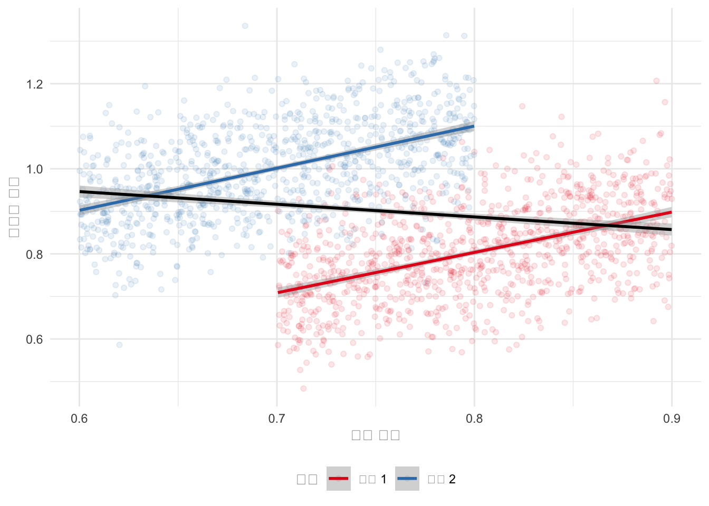
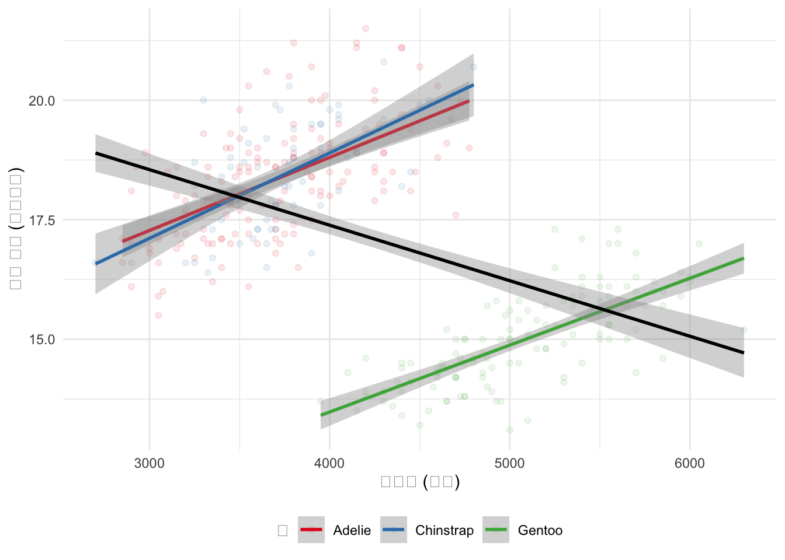
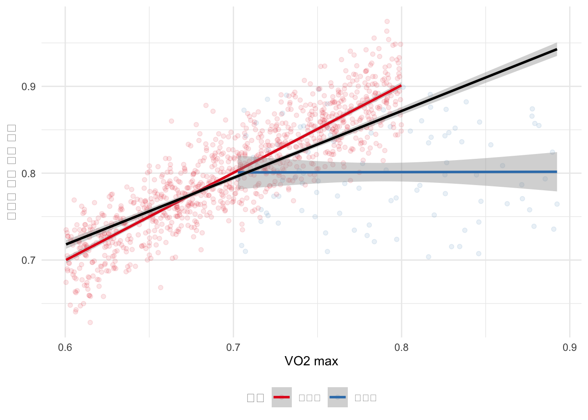
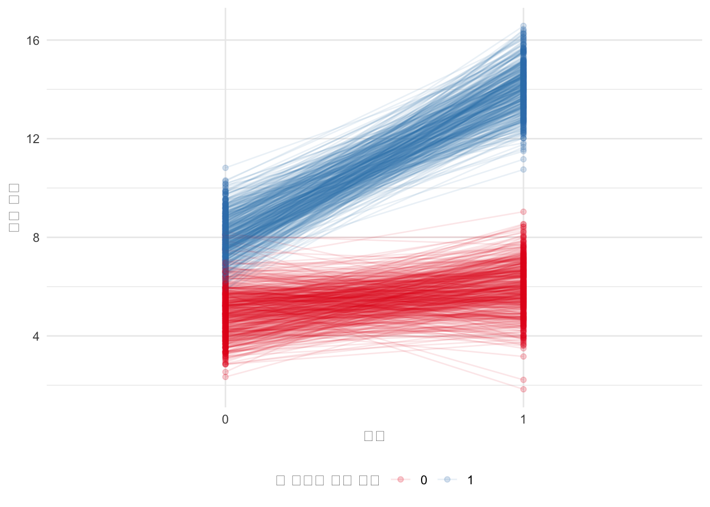
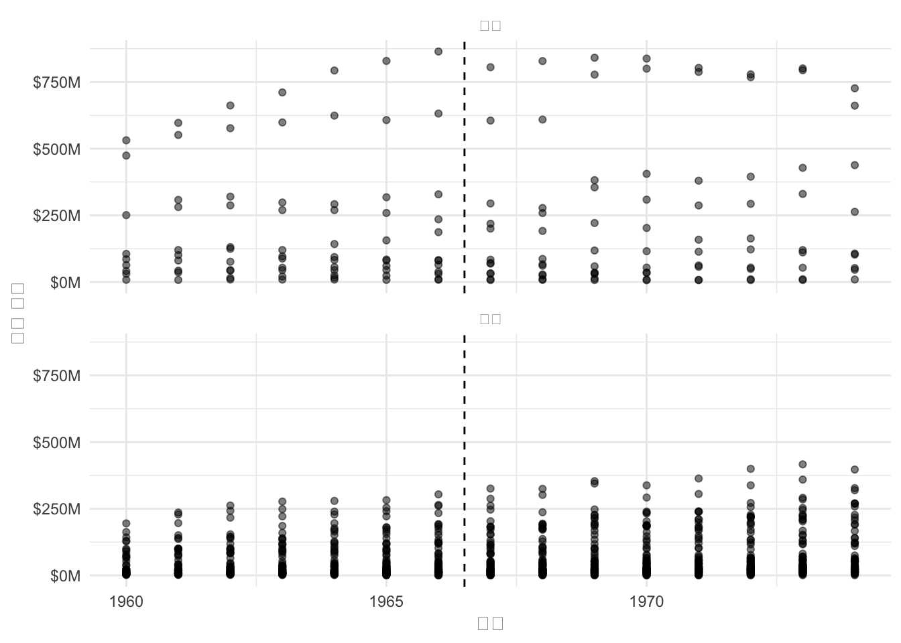
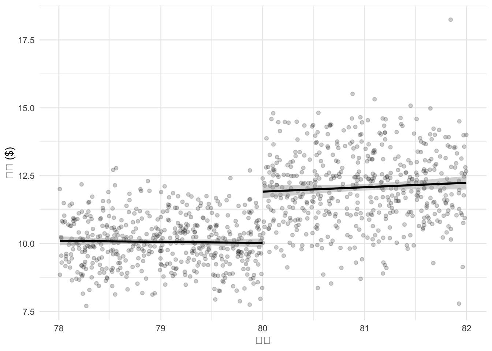
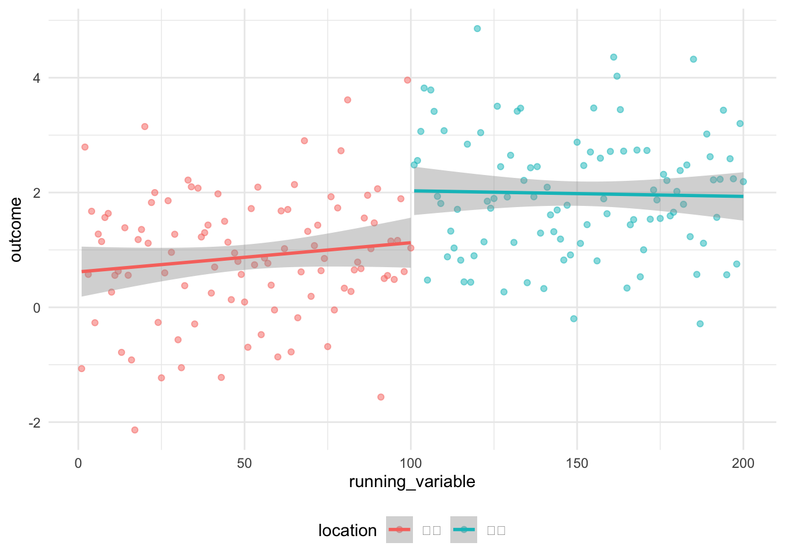
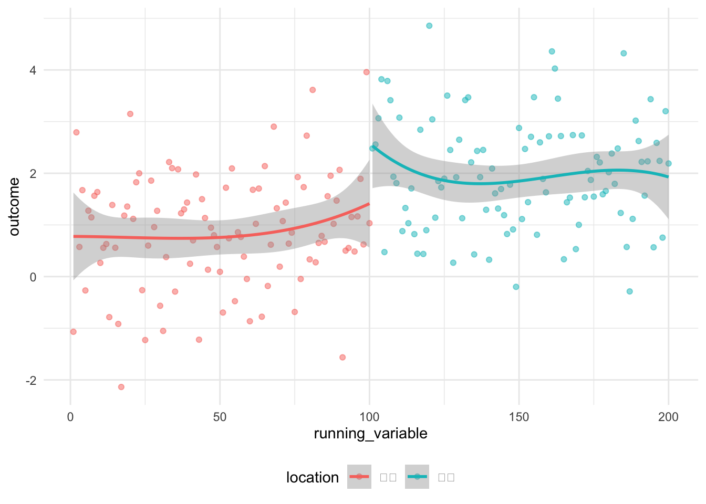
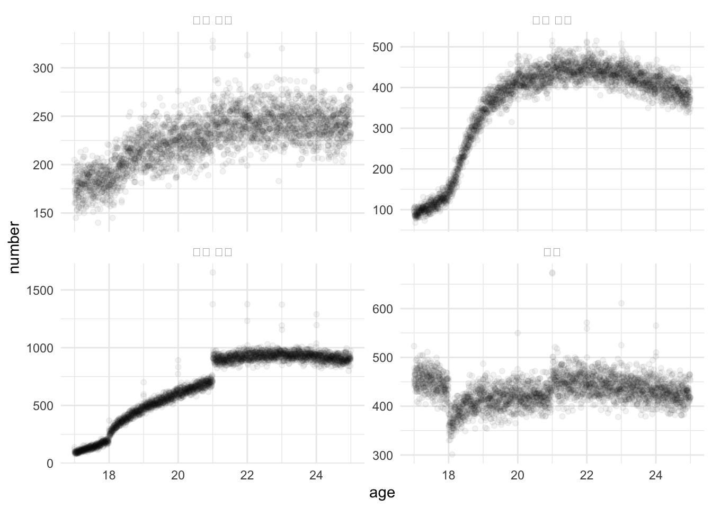
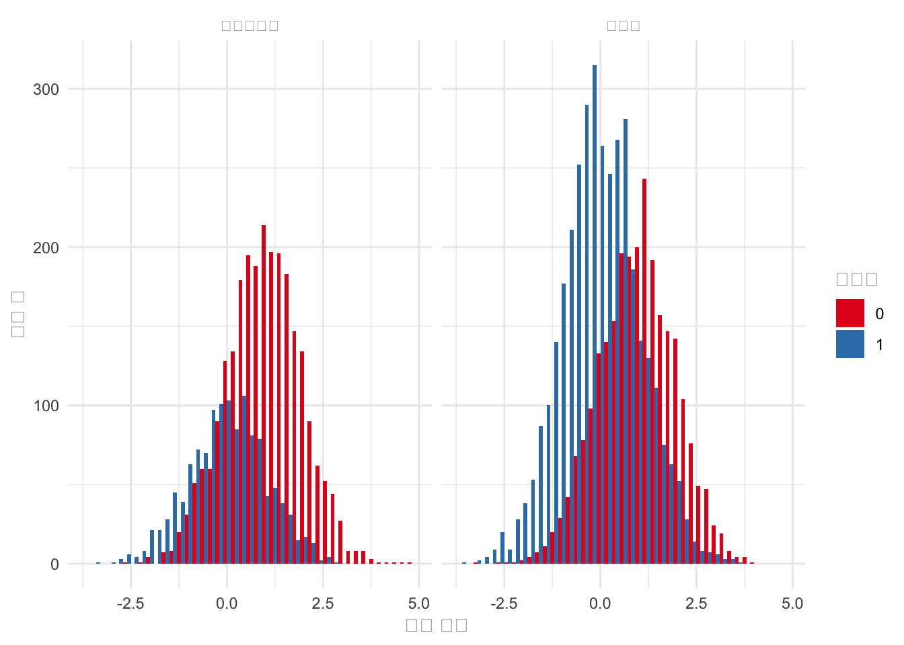

library(broom)
library(broom.mixed)
library(estimatr)
library(haven)
library(MatchIt)
library(modelsummary)
library(palmerpenguins)
library(rdrobust)
library(rstanarm)
library(scales)
library(tidyverse)
library(tinytable)15 관찰 데이터에서 인과 관계
선수 지식
- 데이터 분석가를 위한 인과 설계 패턴, (Riederer 2021)
- 이 블로그 게시물은 관찰 데이터에서 인과적 주장을 하는 다양한 접근 방식에 대한 개요를 제공합니다.
- 전국 대규모 백신 접종 환경에서의 BNT162b2 mRNA Covid-19 백신, (Dagan 기타 2021)
- 이 논문은 관찰 데이터에서 도출된 인과적 결론과 무작위 시험의 결론을 비교합니다.
- 효과: 연구 설계 및 인과 관계 소개, (Huntington-Klein 2021)
- 관찰 데이터에서 인과적 주장을 하는 세 가지 주요 접근 방식에 대한 개요를 제공하는 18장 “차이-차이”, 19장 “도구 변수”, 20장 “회귀 불연속성”에 집중하세요.
- 관찰 연구로서의 회귀 불연속성 설계 이해, (Sekhon 와/과 Titiunik 2017)
- 회귀 불연속성 사용에 대한 몇 가지 우려를 논의합니다.
핵심 개념 및 기술
- 실험을 수행하는 것이 항상 가능한 것은 아니지만, 그럼에도 불구하고 어느 정도 인과 관계에 대해 말할 수 있는 다양한 접근 방식을 사용할 수 있습니다.
- 심슨의 역설과 버크슨의 역설을 포함한 일반적인 역설에 주의해야 하며, 매칭의 잠재력과 함정을 모두 인식해야 합니다.
- 두 시간대에 처리된 단위와 처리되지 않은 단위에 대한 데이터가 있을 때 차이-차이를 사용할 수 있습니다. 회귀 불연속성은 그룹이 처리되거나 처리되지 않지만, 두 그룹이 처리 외에는 매우 유사할 때 유용합니다. 그리고 도구 변수는 다른 변수를 통해 간접적으로 인과 관계를 추정하는 데 사용되는 접근 방식입니다.
- 일반적으로 이러한 접근 방식은 겸손하게 사용해야 하며, 우리가 테스트할 수 있는 것과 테스트할 수 없는 것 모두 약점과 가정에 대한 우려를 가져야 합니다.
소프트웨어 및 패키지
- Base R (R Core Team 2024)
broom(Robinson, Hayes, 와/과 Couch 2022)broom.mixed(Bolker 와/과 Robinson 2022)estimatr(Blair 기타 2021)haven(Wickham, Miller, 와/과 Smith 2023)MatchIt(Ho 기타 2011)modelsummary(Arel-Bundock 2022)palmerpenguins(Horst, Presmanes Hill, 와/과 Gorman 2020)rdrobust(Calonico 기타 2021)rstanarm(Goodrich 기타 2023)scales(Wickham 와/과 Seidel 2022)tidyverse(Wickham 기타 2019)tinytable(Arel-Bundock 2024)
15.1 서론
인과 관계에 대해 말할 수 있도록 실험을 수행할 수 있다면 삶은 훌륭합니다.\index{causal inference} 그러나 실험을 실행할 수 없는 상황에서도 인과적 주장을 하고 싶을 때가 있습니다. 그리고 실험 외부의 데이터는 실험이 가지지 않는 가치를 가집니다. 이 장에서는 관찰 데이터를 사용하여 인과 관계에 대해 말할 수 있는 상황과 방법을 논의합니다. 우리는 통계학뿐만 아니라 경제학\index{economics} 및 정치학\index{political science}과 같은 다양한 사회 과학, 그리고 역학\index{epidemiology}에서 가져온 비교적 간단한 방법을 정교한 방식으로 사용합니다.
예를 들어, (dagan2021bnt162b2는?) 관찰 데이터를 사용하여 Pfizer-BioNTech 백신의 효과를 확인합니다.\index{causal inference!observational data} 그들은 이러한 방식으로 관찰 데이터를 사용하는 한 가지 우려 사항은 혼란 변수라고 논의합니다. 이는 예측 변수와 결과 변수 모두에 영향을 미치고 허위 관계를 초래할 수 있는 어떤 변수가 있다고 우려하는 경우입니다.\index{confounder} (dagan2021bnt162b2는?) 백신 접종자와 비접종자 간에 일대일 매칭을 통해 연령, 성별, 지리적 위치 및 의료 사용과 같은 잠재적 혼란 변수 목록을 먼저 작성한 다음 각각을 조정하여 이를 해결합니다. 실험 데이터는 관찰 데이터 사용을 안내했으며, 후자의 더 큰 크기는 특정 연령대 및 질병 범위에 초점을 맞출 수 있게 했습니다.
이 장은 관찰 데이터를 정교한 방식으로 사용하는 것에 관한 것입니다. A/B 테스트나 RCT를 실행할 수 없을 때에도 인과적 진술을 편안하게 할 수 있는 방법입니다. 실제로, 어떤 상황에서는 그러한 테스트를 실행하지 않거나, 그 외에 관찰 기반 접근 방식을 실행하는 것을 선호할 수도 있습니다. 우리는 세 가지 주요 방법인 차이-차이, 회귀 불연속성, 도구 변수를 다룹니다.
15.2 두 가지 일반적인 역설
데이터가 우리를 속일 수 있는 두 가지 매우 흔한 상황이 있으므로 명시적으로 다룰 것입니다. 이들은 다음과 같습니다.
- 심슨의 역설,\index{Simpson’s paradox} 그리고
- 버크슨의 역설.\index{Berkson’s paradox}
15.2.1 심슨의 역설
심슨의 역설은 데이터의 하위 집합에 대해 어떤 관계를 추정하지만, 전체 데이터셋을 고려할 때 다른 관계가 나타날 때 발생합니다(Simpson 1951). 이는 생태학적 오류의 특정 사례로, 그룹을 기반으로 개인에 대해 주장하려고 할 때 발생합니다. 예를 들어, 두 학과에서 학부 성적과 대학원 성적 사이에 개별적으로 각 학과를 고려할 때 양의 관계가 있을 수 있습니다. 그러나 학부 성적이 한 학과에서 다른 학과보다 높은 경향이 있었고 대학원 성적은 그 반대인 경우, 학부 성적과 대학원 성적 사이에 음의 관계를 발견할 수 있습니다. 이를 더 명확하게 보여주기 위해 일부 데이터를 시뮬레이션할 수 있습니다(그림 fig-simpsonsparadox).\index{simulation!Simpson’s paradox}\index{distribution!Normal}
set.seed(853)
number_in_each <- 1000
department_one <-
tibble(
undergrad = runif(n = number_in_each, min = 0.7, max = 0.9),
noise = rnorm(n = number_in_each, 0, sd = 0.1),
grad = undergrad + noise,
type = "학과 1"
)
department_two <-
tibble(
undergrad = runif(n = number_in_each, min = 0.6, max = 0.8),
noise = rnorm(n = number_in_each, 0, sd = 0.1),
grad = undergrad + noise + 0.3,
type = "학과 2"
)
both_departments <- rbind(department_one, department_two)
both_departments# A tibble: 2,000 × 4
undergrad noise grad type
<dbl> <dbl> <dbl> <chr>
1 0.772 -0.0566 0.715 학과 1
2 0.724 -0.0312 0.693 학과 1
3 0.797 0.0770 0.874 학과 1
4 0.763 -0.0664 0.697 학과 1
5 0.707 0.0717 0.779 학과 1
6 0.781 -0.0165 0.764 학과 1
7 0.726 -0.104 0.623 학과 1
8 0.749 0.0527 0.801 학과 1
9 0.732 -0.0471 0.684 학과 1
10 0.738 0.0552 0.793 학과 1
# ℹ 1,990 more rowsboth_departments |>
ggplot(aes(x = undergrad, y = grad)) +
geom_point(aes(color = type), alpha = 0.1) +
geom_smooth(aes(color = type), method = "lm", formula = "y ~ x") +
geom_smooth(method = "lm", formula = "y ~ x", color = "black") +
labs(
x = "학부 결과",
y = "대학원 결과",
color = "학과"
) +
theme_minimal() +
scale_color_brewer(palette = "Set1") +
theme(legend.position = "bottom")

심슨의 역설은 종종 캘리포니아 대학교 버클리\index{Berkeley}의 대학원 입학에 대한 실제 데이터를 사용하여 설명됩니다(Bickel, Hammel, 와/과 O’Connell 1975). 이 논문은 sec-on-writing에서 출판된 가장 훌륭한 부제목 중 하나로 언급되었습니다. (Hernn2011은?) 관계와 역설의 원인을 더 자세히 설명하는 DAG를 생성합니다.
최근에는 문서에 언급된 바와 같이 palmerpenguins의 “펭귄” 데이터셋은 펭귄의 다른 종에서 체질량과 부리 깊이 사이의 관계에 대한 실제 데이터를 사용하여 심슨의 역설의 예를 제공합니다(그림 fig-simpsonsparadoxinpenguins). 전체적인 음의 추세는 젠투 펭귄이 아델리 및 턱끈 펭귄에 비해 더 무겁지만 부리가 더 짧은 경향이 있기 때문에 발생합니다.
penguins |>
ggplot(aes(x = body_mass_g, y = bill_depth_mm)) +
geom_point(aes(color = species), alpha = 0.1) +
geom_smooth(aes(color = species), method = "lm", formula = "y ~ x") +
geom_smooth(
method = "lm",
formula = "y ~ x",
color = "black"
) +
labs(
x = "체질량 (그램)",
y = "부리 깊이 (밀리미터)",
color = "종"
) +
theme_minimal() +
scale_color_brewer(palette = "Set1") +
theme(legend.position = "bottom")

15.2.2 버크슨의 역설
버크슨의 역설\index{Berkson’s paradox}은 우리가 가진 데이터셋을 기반으로 어떤 관계를 추정하지만, 데이터셋이 너무 선택적이어서 더 일반적인 데이터셋에서는 관계가 달라질 때 발생합니다(Berkson 1946). 예를 들어, 프로 사이클리스트 데이터셋이 있다면 VO2 max와 자전거 경주 우승 확률 사이에 관계가 없다는 것을 발견할 수 있습니다(Coyle 기타 1988; Podlogar, Leo, 와/과 Spragg 2022). 그러나 일반 인구 데이터셋이 있다면 이 두 변수 사이에 관계를 발견할 수 있습니다. 프로 데이터셋은 너무 선택적이어서 관계가 사라집니다. 즉, 충분히 좋은 VO2 max를 가지지 않으면 프로 사이클리스트가 될 수 없지만, 프로 사이클리스트 중에는 모두 충분히 좋은 VO2 max를 가지고 있습니다. 다시, 이를 더 명확하게 보여주기 위해 일부 데이터를 시뮬레이션할 수 있습니다(그림 fig-berksonsparadox).\index{distribution!Normal}
set.seed(853)
num_pros <- 100
num_public <- 1000
professionals <- tibble(
VO2 = runif(num_pros, 0.7, 0.9),
chance_of_winning = runif(num_pros, 0.7, 0.9),
type = "전문가"
)
general_public <- tibble(
VO2 = runif(num_public, 0.6, 0.8),
chance_of_winning = VO2 + rnorm(num_public, 0, 0.03) + 0.1,
type = "일반인"
)
professionals_and_public <- bind_rows(professionals, general_public)professionals_and_public |>
ggplot(aes(x = VO2, y = chance_of_winning)) +
geom_point(aes(color = type), alpha = 0.1) +
geom_smooth(aes(color = type), method = "lm", formula = "y ~ x") +
geom_smooth(method = "lm", formula = "y ~ x", color = "black") +
labs(
x = "VO2 max",
y = "자전거 경주 우승 확률",
color = "유형"
) +
theme_minimal() +
scale_color_brewer(palette = "Set1") +
theme(legend.position = "bottom")

15.3 차이-차이
실험을 수행할 수 있는 이상적인 상황은 거의 불가능합니다. 넷플릭스가 가격을 변경하도록 허용할 것이라고 합리적으로 예상할 수 있을까요? 그리고 한 번 허용하더라도 계속해서 허용할까요? 또한, 처리군과 대조군을 명시적으로 생성할 수 있는 경우는 드뭅니다. 마지막으로, 실험은 비용이 많이 들거나 비윤리적일 수 있습니다. 대신, 우리는 가진 것으로 만족해야 합니다. 무작위화를 통해 반사실이 우리에게 오는 대신, 즉 두 그룹이 처리 외에는 동일하다는 것을 아는 대신, 우리는 처리 외에는 유사한 그룹을 식별하려고 노력하며, 따라서 모든 차이는 처리에 기인할 수 있습니다.\index{difference-in-differences}
관찰 데이터의 경우, 처리하기 전에 두 그룹 간에 차이가 있는 경우가 있습니다. 이러한 사전 처리 차이가 본질적으로 일관성이 있고, 처리 부재 시에도 그 일관성이 계속될 것으로 예상되는 가정(즉, “평행 추세” 가정)을 충족한다면, 차이의 차이를 처리의 효과로 볼 수 있습니다. 차이-차이 분석의 한 가지 측면은 비교적 간단한 방법을 사용하여 수행할 수 있다는 것입니다. 예를 들어, Tang (2015). 이진 변수를 사용한 선형 회귀만으로도 시작하고 설득력 있는 작업을 수행하기에 충분합니다.
새로운 테니스 라켓이 서브 속도에 미치는 영향을 알고 싶다고 가정해 봅시다. 이를 테스트하는 한 가지 방법은 예를 들어 로저 페더러의 테니스 라켓 없는 서브 속도와 열정적인 아마추어인 빌의 테니스 라켓을 사용한 서브 속도 간의 차이를 측정하는 것입니다. 예, 차이를 발견할 수 있겠지만, 테니스 라켓에 얼마나 기인해야 하는지 알 수 있을까요? 또 다른 방법은 빌의 새로운 테니스 라켓 없는 서브 속도와 새로운 테니스 라켓을 사용한 서브 속도 간의 차이를 고려하는 것입니다. 그러나 서브가 시간이 지남에 따라 자연스럽게 빨라진다면 어떨까요? 대신, 두 가지 접근 방식을 결합하여 차이의 차이를 살펴봅니다.
우리는 페더러의 서브 속도를 측정하고 빌의 서브 속도와 비교합니다. 둘 다 새 라켓 없이 측정합니다. 그런 다음 페더러의 서브 속도를 다시 측정하고, 빌의 새 라켓을 사용한 서브 속도를 측정합니다. 그 차이의 차이가 새 라켓의 효과에 대한 추정치가 될 것입니다. 이 분석이 적절한지 확인하기 위해 물어봐야 할 몇 가지 핵심 질문이 있습니다.
- 빌에게만 영향을 미치고 페더러에게는 영향을 미치지 않아 빌의 서브 속도에 영향을 미칠 수 있는 다른 요인이 있습니까?
- 페더러와 빌이 서브 속도 향상에 동일한 궤적을 가질 가능성이 있습니까? 이것이 “평행 추세” 가정이며, 차이-차이 분석의 많은 논의를 지배합니다.
- 마지막으로, 페더러와 빌의 서브 속도 분산이 동일할 가능성이 있습니까?
이러한 요구 사항에도 불구하고, 차이-차이는 강력한 접근 방식입니다. 왜냐하면 처리 전에 처리군과 대조군이 동일할 필요가 없기 때문입니다. 우리는 그들이 어떻게 달랐는지에 대한 좋은 아이디어만 있으면 됩니다.
15.3.1 시뮬레이션 예시: 테니스 서브 속도
상황을 더 구체적으로 설명하기 위해 데이터를 시뮬레이션합니다.\index{simulation!tennis racket} 우리는 처음에 다른 사람들 간의 서브 속도에 1의 차이가 있고, 새 테니스 라켓을 사용한 후 6의 차이가 있는 상황을 시뮬레이션할 것입니다. 그래프를 사용하여 상황을 설명할 수 있습니다(그림 fig-diffindifftennisracket).\index{distribution!Normal}
set.seed(853)
simulated_diff_in_diff <-
tibble(
person = rep(c(1:1000), times = 2),
time = c(rep(0, times = 1000), rep(1, times = 1000)),
treat_group = rep(sample(x = 0:1, size = 1000, replace = TRUE ), times = 2)
) |>
mutate(
treat_group = as.factor(treat_group),
time = as.factor(time)
)
simulated_diff_in_diff <-
simulated_diff_in_diff |>
rowwise() |>
mutate(
serve_speed = case_when(
time == 0 & treat_group == 0 ~ rnorm(n = 1, mean = 5, sd = 1),
time == 1 & treat_group == 0 ~ rnorm(n = 1, mean = 6, sd = 1),
time == 0 & treat_group == 1 ~ rnorm(n = 1, mean = 8, sd = 1),
time == 1 & treat_group == 1 ~ rnorm(n = 1, mean = 14, sd = 1)
)
)
simulated_diff_in_diff# A tibble: 2,000 × 4
# Rowwise:
person time treat_group serve_speed
<int> <fct> <fct> <dbl>
1 1 0 0 4.43
2 2 0 1 6.96
3 3 0 1 7.77
4 4 0 0 5.31
5 5 0 0 4.09
6 6 0 0 4.85
7 7 0 0 6.43
8 8 0 0 5.77
9 9 0 1 6.13
10 10 0 1 7.32
# ℹ 1,990 more rowssimulated_diff_in_diff |>
ggplot(aes(x = time, y = serve_speed, color = treat_group)) +
geom_point(alpha = 0.2) +
geom_line(aes(group = person), alpha = 0.1) +
theme_minimal() +
labs(x = "기간", y = "서브 속도", color = "새 라켓을 얻은 사람") +
scale_color_brewer(palette = "Set1") +
theme(legend.position = "bottom")

평균 차이의 평균을 통해 추정치를 수동으로 얻을 수 있습니다. 그렇게 하면 새 테니스 라켓의 효과가 5.06으로 추정되며, 이는 우리가 시뮬레이션한 것과 유사합니다.
ave_diff <-
simulated_diff_in_diff |>
pivot_wider(
names_from = time,
values_from = serve_speed,
names_prefix = "time_"
) |>
mutate(difference = time_1 - time_0) |>
# 그룹 내에서 이전 및 새 라켓 서브 속도 간의 평균 차이
summarise(average_difference = mean(difference),
.by = treat_group)
# 각 그룹의 평균 차이 간의 차이
ave_diff$average_difference[2] - ave_diff$average_difference[1][1] 5.058414그리고 선형 회귀를 사용하여 동일한 결과를 얻을 수 있습니다. 우리가 관심 있는 모델은 다음과 같습니다.
\[Y_{i,t} = \beta_0 + \beta_1\times\mbox{처리}_i + \beta_2\times\mbox{시간}_t + \beta_3\times(\mbox{처리} \times\mbox{시간})_{i,t} + \epsilon_{i,t}\]
별도의 측면도 포함해야 하지만, 우리가 관심 있는 것은 상호 작용의 추정치입니다. 이 경우 \(\beta_3\)입니다. 그리고 추정된 효과는 5.06임을 알 수 있습니다(표 tbl-diffindifftennisracket).
diff_in_diff_example_regression <-
stan_glm(
formula = serve_speed ~ treat_group * time,
data = simulated_diff_in_diff,
family = gaussian(),
prior = normal(location = 0, scale = 2.5, autoscale = TRUE),
prior_intercept = normal(0, 2.5, autoscale = TRUE),
prior_aux = exponential(rate = 1, autoscale = TRUE),
seed = 853
)
saveRDS(
diff_in_diff_example_regression,
file = "diff_in_diff_example_regression.rds"
)diff_in_diff_example_regression <-
readRDS(file = "diff_in_diff_example_regression.rds")modelsummary(
diff_in_diff_example_regression
)| (1) | |
|---|---|
| (Intercept) | 4.971 |
| treatment_group1 | 3.035 |
| time1 | 1.006 |
| treatment_group1 × time1 | 5.057 |
| Num.Obs. | 2000 |
| R2 | 0.927 |
| R2 Adj. | 0.927 |
| Log.Lik. | -2802.166 |
| ELPD | -2806.3 |
| ELPD s.e. | 32.1 |
| LOOIC | 5612.5 |
| LOOIC s.e. | 64.2 |
| WAIC | 5612.5 |
| RMSE | 0.98 |
15.3.2 가정
차이-차이를 사용하려면 가정을 충족해야 합니다.\index{difference-in-differences!assumptions} 앞서 세 가지가 언급되었지만, 여기서는 “평행 추세” 가정에 초점을 맞출 것입니다. 평행 추세 가정은 차이-차이 분석과 관련된 모든 것을 괴롭힙니다. 왜냐하면 우리는 그것을 결코 증명할 수 없기 때문입니다. 우리는 그것을 확신하고 다른 사람들을 설득하려고 노력할 뿐입니다.
왜 그것을 결코 증명할 수 없는지 이해하기 위해, 새로운 경기장이 프로 스포츠 팀의 승패에 미치는 영향을 알고 싶다고 가정해 봅시다. 이를 위해 두 프로 농구 팀인 골든스테이트 워리어스와 토론토 랩터스를 고려합니다. 워리어스는 2019-20 시즌 시작 시 경기장을 변경했지만 랩터스는 변경하지 않았으므로, 2016-17 시즌, 2017-18 시즌, 2018-19 시즌, 그리고 마지막으로 이동 후 시즌인 2019-20 시즌의 성과를 비교할 것입니다. 여기서 랩터스는 우리의 반사실 역할을 합니다. 이는 새로운 경기장이 없는 경우 워리어스와 랩터스 간의 관계가 일관된 방식으로 계속 변했을 것이라고 가정한다는 것을 의미합니다. 그러나 인과 추론의 근본적인 문제는 우리가 그것을 확실히 알 수 없다는 것입니다.\index{causal inference!fundamental problem} 독자가 가질 수 있는 모든 우려를 해소하기 위해 충분한 증거를 제시해야 합니다.
차이-차이를 사용할 때 타당성에 대한 네 가지 주요 위협이 있으며, 이들 모두를 해결해야 합니다(Cunningham 2021, p. 272–277).
- 비평행 추세. 처리군과 대조군은 차이를 기반으로 할 수 있습니다. 따라서 평행 추세를 설득력 있게 주장하기 어려울 수 있습니다. 이 경우, 모델에서 고려할 다른 요인을 찾아 일부를 조정할 수 있습니다. 이는 삼중 차이 접근 방식을 필요로 할 수 있습니다. 예를 들어, 이전 예시에서 샌프란시스코 49ers(미식축구 팀)를 추가할 수 있습니다. 그들은 워리어스와 동일한 넓은 지리적 지역에 있기 때문입니다. 또는 다른 대조군을 만들 수 있는지 분석을 다시 생각해 볼 수도 있습니다. 추가적인 이전 기간을 추가하는 것이 도움이 될 수 있지만, 세 번째 지점에서 다룰 더 많은 문제를 야기할 수 있습니다.
- 구성적 차이. 이는 반복된 교차 단면을 다룰 때의 우려 사항입니다. 해당 교차 단면의 구성이 변경되면 어떻게 될까요? 예를 들어, 빠르게 성장하는 앱에서 작업하고 있고 어떤 변경의 효과를 보고 싶다고 가정해 봅시다. 초기 교차 단면에서는 주로 젊은 사람들이 있었지만, 후속 교차 단면에서는 앱 사용 인구 통계가 변경됨에 따라 더 많은 노년층이 있을 수 있습니다. 따라서 우리의 결과는 우리가 관심 있는 변경의 효과가 아니라 단순히 연령 효과일 수 있습니다.
- 신뢰성과 비교한 장기적인 효과. sec-hunt-data에서 논의했듯이, 우리가 실행하는 분석의 길이에 따라 절충안이 있습니다. 분석을 더 오래 실행할수록 다른 요인이 결과에 영향을 미 미칠 가능성이 더 커집니다. 또한 치료받지 않은 사람이 치료받을 가능성도 증가합니다. 그러나 다른 한편으로는 단기적인 결과가 장기적으로 계속될 것이라고 설득력 있게 주장하기 어려울 수 있습니다.
- 함수형태 의존성. 결과가 유사할 때는 문제가 덜하지만, 다를 경우 함수형태가 결과의 일부 측면에 영향을 미칠 수 있습니다.
15.3.3 1960년에서 1974년 사이 프랑스 신문 가격
이 사례 연구에서는 (angelucci2019newspapers를?) 소개합니다. 그들은 텔레비전 도입이 프랑스 신문에 미치는 영향을 이해하는 데 관심이 있습니다. 주요 발견 중 하나를 재현할 것입니다.\index{France!newspaper prices}\index{difference-in-differences!French newspapers}
신문의 비즈니스 모델은 인터넷으로 인해 도전을 받았고 많은 지역 신문이 폐간되었습니다. 이 문제는 새로운 것이 아닙니다. 텔레비전이 도입되었을 때도 비슷한 우려가 있었습니다. (angelucci2019newspapers는?) 1967년에 발표된 프랑스의 텔레비전 광고 도입을 사용하여 광고 수익 감소가 신문에 미치는 영향을 조사합니다. 그들은 1960년부터 1974년까지 프랑스 신문 데이터셋을 생성한 다음 차이-차이를 사용하여 광고 수익 감소가 신문의 콘텐츠 및 가격에 미치는 영향을 조사합니다. 그들이 초점을 맞추는 변화는 텔레비전 광고 도입이며, 이는 지역 신문보다 전국 신문에 더 큰 영향을 미쳤다고 주장합니다. 그들은 이러한 변화가 신문의 저널리즘 콘텐츠 감소와 신문 가격 하락으로 이어진다는 것을 발견합니다. 이러한 변화에 초점을 맞추고 차이-차이를 사용하여 분석하는 것은 몇 가지 경쟁 효과를 분리하는 데 중요합니다. 예를 들어, 신문이 더 이상 광고에 높은 가격을 청구할 수 없었기 때문에 불필요해졌는지, 아니면 소비자들이 텔레비전에서 뉴스를 얻는 것을 선호했기 때문인지?
(angelucci2019newspapers의?) 기반 데이터에 대한 무료 접근은 등록 후 여기에서 얻을 수 있습니다. 데이터셋은 Stata 데이터 형식인 “.dta”이며, haven의 read_dta()로 읽을 수 있습니다. 우리가 관심 있는 파일은 “Angelucci_Cage_AEJMicro_dataset.dta”이며, 이는 “dta” 폴더에 있습니다.
newspapers <- read_dta("Angelucci_Cage_AEJMicro_dataset.dta")데이터셋에는 1,196개의 관측치와 52개의 변수가 있습니다. (angelucci2019newspapers는?) 1960-1974년 기간에 관심이 있으며, 약 100개의 신문이 있습니다. 기간 시작 시 14개의 전국 신문이 있었고, 끝에는 12개가 있었습니다. 핵심 기간은 1967년으로, 프랑스 정부가 텔레비전 광고를 허용한다고 발표한 때입니다. (angelucci2019newspapers는?) 전국 신문이 이러한 변화의 영향을 받았지만, 지역 신문은 그렇지 않았다고 주장합니다. 전국 신문은 처리군이고 지역 신문은 대조군입니다.
우리는 헤드라인 차이-차이 결과에만 초점을 맞추고 요약 통계를 구성합니다.
newspapers <-
newspapers |>
select(
year, id_news, after_national, local, national, ra_cst, ps_cst, qtotal
) |>
mutate(ra_cst_div_qtotal = ra_cst / qtotal,
across(c(id_news, after_national, local, national), as.factor),
year = as.integer(year))
newspapers# A tibble: 1,196 × 9
year id_news after_national local national ra_cst ps_cst qtotal
<int> <fct> <fct> <fct> <fct> <dbl> <dbl> <dbl>
1 1960 1 0 1 0 52890272 2.29 94478.
2 1961 1 0 1 0 56601060 2.20 96289.
3 1962 1 0 1 0 64840752 2.13 97313.
4 1963 1 0 1 0 70582944 2.43 101068.
5 1964 1 0 1 0 74977888 2.35 102103.
6 1965 1 0 1 0 74438248 2.29 105169.
7 1966 1 0 1 0 81383000 2.31 126235.
8 1967 1 0 1 0 80263152 2.88 128667.
9 1968 1 0 1 0 87165704 3.45 131824.
10 1969 1 0 1 0 102596384 3.28 132417.
# ℹ 1,186 more rows
# ℹ 1 more variable: ra_cst_div_qtotal <dbl>1967년 이후에 무슨 일이 일어났는지, 특히 광고 수익 측면에서, 그리고 전국 신문과 비교하여 지역 신문에 어떤 차이가 있었는지에 관심이 있습니다(그림 fig-frenchnewspapersrevenue). y축을 조정하기 위해 scales를 사용합니다.
newspapers |>
mutate(type = if_else(local == 1, "지역", "전국")) |>
ggplot(aes(x = year, y = ra_cst)) +
geom_point(alpha = 0.5) +
scale_y_continuous(
labels = dollar_format(
prefix = "$",
suffix = "M",
scale = 0.000001)) +
labs(x = "연도", y = "광고 수익") +
facet_wrap(vars(type), nrow = 2) +
theme_minimal() +
geom_vline(xintercept = 1966.5, linetype = "dashed")

우리가 추정하는 데 관심 있는 모델은 다음과 같습니다.
\[\mbox{ln}(y_{n,t}) = \beta_0 + \beta_1\times(\mbox{전국 이진}\times\mbox{1967년 이후 이진}) + \lambda_n + \gamma_t + \epsilon\]
특히 관심 있는 것은 \(\beta_1\) 계수입니다. stan_glm()을 사용하여 모델을 추정합니다.
ad_revenue <-
stan_glm(
formula = log(ra_cst) ~ after_national + id_news + year,
data = newspapers,
family = gaussian(),
prior = normal(location = 0, scale = 2.5, autoscale = TRUE),
prior_intercept = normal(0, 2.5, autoscale = TRUE),
prior_aux = exponential(rate = 1, autoscale = TRUE),
seed = 853
)
saveRDS(
ad_revenue,
file = "ad_revenue.rds"
)
ad_revenue_div_circulation <-
stan_glm(
formula = log(ra_cst_div_qtotal) ~ after_national + id_news + year,
data = newspapers,
family = gaussian(),
prior = normal(location = 0, scale = 2.5, autoscale = TRUE),
prior_intercept = normal(0, 2.5, autoscale = TRUE),
prior_aux = exponential(rate = 1, autoscale = TRUE),
seed = 853
)
saveRDS(
ad_revenue_div_circulation,
file = "ad_revenue_div_circulation.rds"
)
# 소비자 측면
subscription_price <-
stan_glm(
formula = log(ps_cst) ~ after_national + id_news + year,
data = newspapers,
family = gaussian(),
prior = normal(location = 0, scale = 2.5, autoscale = TRUE),
prior_intercept = normal(0, 2.5, autoscale = TRUE),
prior_aux = exponential(rate = 1, autoscale = TRUE),
seed = 853
)
saveRDS(
subscription_price,
file = "subscription_price.rds"
)ad_revenue <-
readRDS(file = "ad_revenue.rds")
ad_revenue_div_circulation <-
readRDS(file = "ad_revenue_div_circulation")
subscription_price <-
readRDS(file = "subscription_price.rds")표 tbl-frenchnewspapersadvertising에서 수익 및 가격과 같은 광고 관련 변수를 살펴보면 일관되게 음의 계수를 발견합니다.
selected_variables <- c("year" = "연도", "after_national1" = "변경 후")
modelsummary(
models = list(
"광고 수익" = ad_revenue,
"순환 대비 광고 수익" = ad_revenue_div_circulation,
"구독 가격" = subscription_price
),
fmt = 2,
coef_map = selected_variables
)| 광고 수익 | 순환 대비 광고 수익 | 구독 가격 | |
|---|---|---|---|
| 연도 | 0.05 | 0.04 | 0.05 |
| 변경 후 | -0.23 | -0.15 | -0.04 |
| Num.Obs. | 1052 | 1048 | 1044 |
| R2 | 0.984 | 0.896 | 0.868 |
| R2 Adj. | 0.983 | 0.886 | 0.852 |
| Log.Lik. | 336.539 | 441.471 | 875.559 |
| ELPD | 257.4 | 362.3 | 793.5 |
| ELPD s.e. | 34.4 | 45.6 | 24.3 |
| LOOIC | -514.8 | -724.6 | -1586.9 |
| LOOIC s.e. | 68.9 | 91.2 | 48.6 |
| WAIC | -515.9 | -725.5 | -1588.9 |
| RMSE | 0.17 | 0.16 | 0.10 |
(angelucci2019newspapers의?) 주요 결과를 재현할 수 있으며, 많은 경우 1967년 이후로 차이가 나타나는 것을 발견합니다. Angelucci 와/과 Cagé (2019, pp. 353-358)는 또한 차이-차이 모델에 필요한 해석, 외부 타당성 및 견고성에 대한 논의의 훌륭한 예시를 포함합니다.
15.4 성향 점수 매칭
차이-차이는 강력한 분석 프레임워크입니다. 그러나 적절한 처리군과 대조군을 식별하기 어려울 수 있습니다. (alexander2018age는?) 이주 형제를 비교합니다. 한 형제는 대부분의 교육을 다른 나라에서 받았고, 다른 형제는 대부분의 교육을 미국에서 받았습니다. 사용 가능한 데이터를 고려할 때, 이 매칭은 합리적인 처리군과 대조군을 제공합니다. 그러나 친구나 사촌과 같은 다른 매칭은 다른 결과를 제공할 수 있습니다.
우리는 관찰 가능한 변수를 기반으로만 매칭할 수 있습니다. 예를 들어, 연령대 또는 교육. 두 가지 다른 시점에서 한 도시의 18세 흡연율과 다른 도시의 18세 흡연율을 비교합니다. 이것은 거친 매칭이 될 것입니다. 왜냐하면 18세 사이에는 우리가 일반적으로 관찰하는 변수, 예를 들어 성별 및 교육 측면에서도 많은 차이가 있다는 것을 알고 있기 때문입니다. 이를 처리하는 한 가지 방법은 하위 그룹을 만드는 것입니다. 예를 들어, 고등학교 교육을 받은 18세 남성 등. 그러나 그러면 표본 크기가 빠르게 작아집니다. 또한 연속 변수를 처리하는 방법도 문제입니다. 그리고 18세가 19세와 정말 그렇게 다릅니까? 그들과도 비교해 보는 것은 어떻습니까?
진행하는 한 가지 방법은 최근접 이웃 접근 방식을 고려하는 것이지만, 이 접근 방식은 불확실성에 대한 우려가 제한적일 수 있습니다. 또한 많은 변수가 있는 경우 고차원 그래프가 될 수 있다는 문제가 있을 수 있습니다. 이는 성향 점수 매칭으로 이어집니다. 여기서는 성향 점수 매칭의 과정과 일반적으로 제기되는 몇 가지 우려 사항을 설명합니다.
성향 점수 매칭\index{propensity score matching}은 각 관측치에 어떤 확률(즉, “성향 점수”)을 할당하는 것을 포함합니다. 우리는 처리가 없는 예측 변수에 대한 관측치의 값을 기반으로 해당 확률을 구성합니다. 해당 확률은 실제로 처리되었는지 여부에 관계없이 관측치가 처리될 확률에 대한 우리의 최상의 추측입니다. 예를 들어, 18세 남성이 처리되었지만 19세 남성은 처리되지 않았다면, 일반적으로 18세 남성과 19세 남성 사이에 큰 차이가 없으므로 할당된 확률은 유사할 것입니다. 그런 다음 유사한 성향 점수를 가진 관측치의 결과를 비교합니다.
15.4.1 시뮬레이션 예시: 무료 배송
성향 점수 매칭의 한 가지 장점은 많은 예측 변수를 한 번에 쉽게 고려할 수 있으며, 로지스틱 회귀를 사용하여 구성할 수 있다는 것입니다. 더 구체적으로 일부 데이터를 시뮬레이션할 수 있습니다. 우리는 대형 온라인 소매업체에서 일한다고 가정할 것입니다. 우리는 일부 개인에게 무료 배송을 제공하여 평균 구매에 어떤 일이 발생하는지 확인할 것입니다.\index{distribution!Normal}
set.seed(853)
sample_size <- 10000
purchase_data <-
tibble(
unique_person_id = 1:sample_size,
age = sample(x = 18:100, size = sample_size, replace = TRUE),
gender = sample(
x = c("여성", "남성", "기타/거부"),
size = sample_size,
replace = TRUE,
prob = c(0.49, 0.47, 0.02)
),
income = rnorm(n = sample_size, mean = 60000, sd = 15000) |> round(0)
)
purchase_data# A tibble: 10,000 × 4
unique_person_id age gender income
<int> <int> <chr> <dbl>
1 1 26 남성 68637
2 2 81 여성 71486
3 3 34 남성 75652
4 4 46 남성 68068
5 5 100 여성 73206
6 6 20 남성 41872
7 7 50 여성 75957
8 8 36 여성 56566
9 9 72 남성 54621
10 10 52 여성 40722
# ℹ 9,990 more rows그런 다음 무료 배송으로 처리될 확률을 추가해야 합니다. 우리는 그것이 예측 변수에 따라 달라지며, 젊고, 고소득이며, 남성인 개인이 이 처리를 더 가능하게 한다고 말할 것입니다. 우리는 상황을 시뮬레이션했기 때문에 그것을 알고 있습니다. 실제 데이터를 사용한다면 알지 못할 것입니다.
purchase_data <-
purchase_data |>
mutate(
# 특성을 제한된 숫자로 변경
age_num = rank(1 / age, ties.method = "random") %/% 3000,
# 0과 3 사이로 강제
gender_num = case_when(
gender == "남성" ~ 3,
gender == "여성" ~ 2,
gender == "기타/거부" ~ 1
),
income_num = rank(income, ties.method = "random") %/% 3000
) |>
mutate(
sum_num = age_num + gender_num + income_num,
softmax_prob = exp(sum_num) / exp(max(sum_num) + 0.5),
free_shipping = rbinom(n = sample_size, size = 1, prob = softmax_prob)) |>
select(-(age_num:softmax_prob))마지막으로, 개인의 평균 지출에 대한 어떤 측정값이 필요합니다. 우리는 이것이 소득에 따라 증가한다고 가정할 것입니다. 무료 배송을 받은 사람들의 지출이 그렇지 않은 사람들보다 약간 더 높기를 원합니다.\index{distribution!Normal}
purchase_data <-
purchase_data |>
mutate(
noise = rnorm(n = nrow(purchase_data), mean = 5, sd = 2),
spend = income / 1000 + noise,
spend = if_else(free_shipping == 1, spend + 10, spend),
spend = as.integer(spend)
) |>
select(-noise) |>
mutate(across(c(gender, free_shipping), as.factor))
purchase_data# A tibble: 10,000 × 6
unique_person_id age gender income free_shipping spend
<int> <int> <fct> <dbl> <fct> <int>
1 1 26 남성 68637 0 72
2 2 81 여성 71486 0 73
3 3 34 남성 75652 0 80
4 4 46 남성 68068 0 75
5 5 100 여성 73206 0 78
6 6 20 남성 41872 0 45
7 7 50 여성 75957 0 78
8 8 36 여성 56566 0 62
9 9 72 남성 54621 0 55
10 10 52 여성 40722 0 47
# ℹ 9,990 more rows순진하게도 무료 배송을 받은 사람들과 그렇지 않은 사람들 간의 평균 지출에 차이가 있음을 알 수 있습니다(표 tbl-heyheybigspender). 그러나 근본적인 우려는 무료 배송을 받지 않았다면 무료 배송을 받은 사람들의 지출이 어떠했을까 하는 것입니다. 표 tbl-heyheybigspender는 평균 비교를 보여주지만, 모든 사람이 무료 배송을 받을 기회가 동일하지는 않았습니다. 따라서 우리는 평균 비교 사용의 타당성에 의문을 제기합니다. 대신 성향 점수 매칭을 사용하여 실제로 무료 배송을 받은 각 관측치를 관찰 가능한 변수를 기반으로 무료 배송을 받지 않은 가장 유사한 관측치와 “연결”합니다. 결과는 508개의 관측치를 가진 데이터셋입니다.
matched_groups <-
matchit(
free_shipping ~ age + gender + income,
data = purchase_data,
method = "nearest",
distance = "glm"
)
matched_groupsA `matchit` object
- method: 1:1 nearest neighbor matching without replacement
- distance: Propensity score
- estimated with logistic regression
- number of obs.: 10000 (original), 508 (matched)
- target estimand: ATT
- covariates: age, gender, incomematched_dataset <- match.data(matched_groups)
matched_dataset# A tibble: 508 × 9
unique_person_id age gender income free_shipping spend distance weights
<int> <int> <fct> <dbl> <fct> <int> <dbl> <dbl>
1 23 28 여성 65685 1 79 0.0334 1
2 24 67 남성 71150 0 76 0.0220 1
3 32 22 여성 86071 0 92 0.131 1
4 48 66 여성 100105 0 108 0.0473 1
5 59 25 남성 55548 1 68 0.0541 1
6 82 66 남성 70721 0 75 0.0224 1
7 83 58 남성 83443 0 88 0.0651 1
8 87 46 남성 59073 1 73 0.0271 1
9 119 89 기타/거부 72284 0 74 0.00301 1
10 125 51 여성 81164 1 96 0.0303 1
# ℹ 498 more rows
# ℹ 1 more variable: subclass <fct>마지막으로, 선형 회귀를 사용하여 평균 지출에 대한 처리 효과를 추정할 수 있습니다(표 tbl-treatedexample). 특히 관심 있는 것은 처리 변수, 이 경우 무료 배송과 관련된 계수입니다.
propensity_score_regression <- lm(
spend ~ age + gender + income + free_shipping,
data = matched_dataset
)
modelsummary(propensity_score_regression)| (1) | |
|---|---|
| (Intercept) | 3.353 |
| (0.981) | |
| age | 0.007 |
| (0.005) | |
| gender남성 | 0.522 |
| (0.835) | |
| gender여성 | 0.509 |
| (0.847) | |
| income | 0.001 |
| (0.000) | |
| free_shipping1 | 10.073 |
| (0.180) | |
| Num.Obs. | 508 |
| R2 | 0.983 |
| R2 Adj. | 0.983 |
| AIC | 2167.6 |
| BIC | 2197.2 |
| Log.Lik. | -1076.811 |
| F | 5911.747 |
| RMSE | 2.02 |
표 tbl-treatedexample는 매칭된 표본만을 기반으로 하며, 효과가 우리가 시뮬레이션한 것과 같다는 것을 발견합니다. 즉, 무료 배송을 받은 사람들과 그렇지 않은 사람들 간의 평균 지출에 10의 차이가 있습니다. 이는 전체 표본을 기반으로 한 표 tbl-heyheybigspender와 대조됩니다.
성향 점수 매칭을 다루는 이유는 널리 사용되기 때문입니다. 그러나 절충안이 있습니다. 사용 시 투명성이 필요합니다(Greifer 2021). 이러한 우려 사항에는 다음이 포함됩니다(King 와/과 Nielsen 2019).\index{propensity score matching!concerns}
- 관찰 불가능한 변수. 성향 점수 매칭은 관찰 불가능한 변수에 대해 매칭할 수 없습니다. 이는 교실 환경에서는 괜찮을 수 있지만, 더 현실적인 환경에서는 문제를 야기할 가능성이 높습니다. 매우 유사해 보이는 개인이 다른 처리를 받았을 때, 차이를 유발하는 관찰 불가능한 어떤 것이 없다면 이해하기 어렵습니다. 성향 점수 매칭은 이러한 것을 설명할 수 없으므로, 어떤 기능이 실제로 함께 모이는지 알기 어렵습니다.
- 모델링. 성향 점수 매칭의 결과는 사용되는 모델에 따라 달라지는 경향이 있습니다. 어떤 모델을 사용할지에 대한 상당한 유연성이 있으므로, 연구자는 적합한 모델을 찾기 위해 매칭을 선택할 수 있습니다. 또한, 두 회귀 단계(매칭 및 분석)가 별도로 수행되므로 불확실성 전파가 없습니다.
관찰 불가능한 변수의 근본적인 문제는 관찰되지 않은 데이터가 필요하므로 결코 중요하지 않다는 것을 보여줄 수 없습니다. 성향 점수 매칭 및 기타 매칭 방법을 사용하려는 사람들은 그것이 적절하다는 것을 설득력 있게 주장할 수 있어야 합니다. (mckenzieforthedefence는?) 예를 들어 용량 제한이 있을 때 이것이 가능한 몇 가지 경우를 제시합니다. 이 책의 공통된 주제와 마찬가지로, 이러한 경우는 데이터와 그것을 생성한 상황에 대한 깊은 이해에 초점을 맞춰야 합니다.
15.5 회귀 불연속성 설계
회귀 불연속성 설계(RDD)\index{regression discontinuity design}는 (thistlethwaite1960regression에?) 의해 확립되었으며, 처리를 결정하는 절단점이 있는 연속 변수가 있을 때 인과 관계를 얻는 인기 있는 방법입니다. 79%를 얻은 학생과 80%를 얻은 학생 사이에 차이가 있습니까? 아마도 많지 않겠지만, 한 명은 A-를 받을 수 있고 다른 한 명은 B+를 받을 수 있습니다. 성적표에서 그것을 보면 직업에 영향을 미치고 소득에 영향을 미칠 수 있습니다. 이 경우 백분율은 “강제 변수” 또는 “강제 함수”이고 A-의 절단점은 “임계값”입니다. 처리가 강제 변수에 의해 결정되므로 해당 변수를 제어해야 합니다. 이러한 겉보기에 임의적인 절단점은 항상 볼 수 있습니다. 따라서 RDD를 사용하는 많은 연구가 있었습니다.
RDD와 관련하여 약간 다른 용어가 사용되는 경우가 있습니다. 예를 들어, (Cunningham2021은?) 강제 함수를 실행 변수라고 부릅니다. 사용되는 정확한 용어는 일관되게 사용하는 한 중요하지 않습니다.
15.5.1 시뮬레이션 예시: 소득 및 성적
상황을 더 구체적으로 설명하기 위해 데이터를 시뮬레이션합니다.\index{simulation!grades} 소득과 성적 간의 관계를 고려하고, 학생이 80점 이상을 받으면 변화가 있다고 시뮬레이션할 것입니다(그림 fig-rddmarks).\index{distribution!Normal}
set.seed(853)
num_observations <- 1000
rdd_example_data <- tibble(
person = c(1:num_observations),
mark = runif(num_observations, min = 78, max = 82),
income = rnorm(num_observations, 10, 1)
)
## 80점 이상이면 소득이 더 높아질 가능성이 높도록 만듭니다.
rdd_example_data <-
rdd_example_data |>
mutate(
noise = rnorm(n = num_observations, mean = 2, sd = 1),
income = if_else(mark >= 80, income + noise, income)
)
rdd_example_data# A tibble: 1,000 × 4
person mark income noise
<int> <dbl> <dbl> <dbl>
1 1 79.4 9.43 1.87
2 2 78.5 9.69 2.26
3 3 79.9 10.8 1.14
4 4 79.3 9.34 2.50
5 5 78.1 10.7 2.21
6 6 79.6 9.83 2.47
7 7 78.5 8.96 4.22
8 8 79.0 10.5 3.11
9 9 78.6 9.53 0.671
10 10 78.8 10.6 2.46
# ℹ 990 more rowsrdd_example_data |>
ggplot(aes(
x = mark,
y = income
)) +
geom_point(alpha = 0.2) +
geom_smooth(
data = rdd_example_data |> filter(mark < 80),
method = "lm",
color = "black",
formula = "y ~ x"
) +
geom_smooth(
data = rdd_example_data |> filter(mark >= 80),
method = "lm",
color = "black",
formula = "y ~ x"
) +
theme_minimal() +
labs(
x = "점수",
y = "소득 ($)"
)

이진 변수를 사용하여 선형 회귀로 80점 이상을 받은 것이 소득에 미치는 영향을 추정할 수 있습니다. 계수가 약 2일 것으로 예상하며, 이는 우리가 시뮬레이션한 것과 일치하고, 우리가 발견한 것입니다(표 tbl-rddexample).
rdd_example_data <-
rdd_example_data |>
mutate(mark_80_and_over = if_else(mark < 80, 0, 1))
rdd_example <-
stan_glm(
formula = income ~ mark + mark_80_and_over,
data = rdd_example_data,
family = gaussian(),
prior = normal(location = 0, scale = 2.5, autoscale = TRUE),
prior_intercept = normal(0, 2.5, autoscale = TRUE),
prior_aux = exponential(rate = 1, autoscale = TRUE),
seed = 853
)
saveRDS(
rdd_example,
file = "rdd_example.rds"
)rdd_example <-
readRDS(file = "rdd_example.rds")modelsummary(
models = rdd_example,
fmt = 2
)| (1) | |
|---|---|
| (Intercept) | 5.22 |
| mark | 0.06 |
| mark_80_and_over | 1.89 |
| Num.Obs. | 1000 |
| R2 | 0.417 |
| R2 Adj. | 0.415 |
| Log.Lik. | -1591.847 |
| ELPD | -1595.1 |
| ELPD s.e. | 25.4 |
| LOOIC | 3190.3 |
| LOOIC s.e. | 50.9 |
| WAIC | 3190.3 |
| RMSE | 1.19 |
이 추정치에는 다양한 주의 사항이 있지만, RDD의 본질은 여기에 있습니다. 적절한 설정과 모델이 주어진다면 RDD는 무작위 시험과 비교하여 유리할 수 있습니다(Bloom, Bell, 와/과 Reiman 2020).
rdrobust를 사용하여 RDD를 구현할 수도 있습니다. 이 접근 방식의 장점은 많은 일반적인 확장을 쉽게 사용할 수 있다는 것입니다.
rdrobust(
y = rdd_example_data$income,
x = rdd_example_data$mark,
c = 80,
h = 2,
all = TRUE
) |>
summary()Sharp RD estimates using local polynomial regression.
Number of Obs. 1000
BW type Manual
Kernel Triangular
VCE method NN
Number of Obs. 497 503
Eff. Number of Obs. 497 503
Order est. (p) 1 1
Order bias (q) 2 2
BW est. (h) 2.000 2.000
BW bias (b) 2.000 2.000
rho (h/b) 1.000 1.000
Unique Obs. 497 503
=============================================================================
Method Coef. Std. Err. z P>|z| [ 95% C.I. ]
=============================================================================
Conventional 1.913 0.161 11.876 0.000 [1.597 , 2.229]
Bias-Corrected 1.966 0.161 12.207 0.000 [1.650 , 2.282]
Robust 1.966 0.232 8.461 0.000 [1.511 , 2.422]
=============================================================================15.5.2 가정
RDD의 주요 가정은 다음과 같습니다(Cunningham 2021, p. 163).\index{regression discontinuity design!assumptions}
- 절단점은 구체적이고 고정되어 있으며 모두에게 알려져 있습니다.
- 강제 함수는 연속적입니다.
첫 번째 가정은 주로 절단점을 조작할 수 없다는 것과 관련이 있으며, 절단점이 의미를 갖도록 보장합니다. 두 번째 가정은 임계값의 양쪽에 있는 사람들이 본질적으로 임계값의 양쪽에 떨어지는 것 외에는 유사하다는 것을 확신할 수 있게 합니다.
sec-hunt-data에서 무작위 대조 시험과 A/B 테스트를 논의했을 때, 처리의 무작위 할당은 통제군과 처리군이 처리 외에는 동일하다는 것을 의미했습니다. 그런 다음 차이-차이로 넘어갔고, 처리군과 통제군 사이에 공통적인 추세가 있다고 가정했습니다. 우리는 그룹이 다를 수 있지만, 그들의 차이를 “차이로 제거”할 수 있다고 허용했습니다. 마지막으로, 매칭을 고려했고, 통제군과 처리군이 달라 보일지라도, 처리되지 않았다는 사실 외에는 모든 면에서 그들과 유사한 그룹과 매칭할 수 있다고 말했습니다.
회귀 불연속성에서는 약간 다른 설정을 고려합니다. 두 그룹은 강제 변수 측면에서 완전히 다릅니다. 그들은 임계값의 양쪽에 있습니다. 전혀 겹치지 않습니다. 그러나 우리는 임계값을 알고 있으며, 양쪽에 있는 사람들이 본질적으로 일치한다고 믿습니다. 2019년 NBA 동부 컨퍼런스 준결승인 토론토와 필라델피아를 고려해 봅시다.
- 1차전: 랩터스 108-95 승;
- 2차전: 76ers 94-89 승;
- 3차전: 76ers 116-95 승;
- 4차전: 랩터스 101-96 승;
- 5차전: 랩터스 125-89 승;
- 6차전: 76ers 112-101 승; 그리고 마지막으로,
- 7차전: 랩터스 92-90 승, 림에 네 번 튕긴 후 들어간 공 때문에.
팀들 사이에 정말 그렇게 큰 차이가 있었을까요?
연속성 가정은 중요하지만, 반사실에 기반하므로 테스트할 수 없습니다. 대신, 사람들을 설득해야 합니다. 이를 수행하는 방법은 다음과 같습니다.
- 테스트/훈련 설정을 사용합니다.
- 다른 사양을 시도합니다. 결과가 선형 또는 2차 함수만으로도 광범위하게 지속되지 않으면 특히 우려합니다.
- 데이터의 다른 하위 집합을 고려합니다.
- 다른 창을 고려합니다. 이는 절단점의 각 측면을 얼마나 멀리 조사하는지에 대한 용어입니다.
- 특히 그래프에서 불확실성 구간에 대해 명확하게 합니다.
- 누락된 변수의 가능성에 대한 우려를 논의하고 해소합니다.
임계값도 중요합니다. 예를 들어, 실제 변화가 있습니까, 아니면 비선형 관계가 있습니까?
RDD의 약점은 다양합니다.
- 외부 타당성이 어려울 수 있습니다. 예를 들어, A-/B+ 예시를 생각할 때, B-/C+ 학생들에게도 일반화하기 어렵습니다.
- 중요한 응답은 절단점에 가까운 응답입니다. 이는 많은 A 및 B 학생이 있더라도 큰 도움이 되지 않는다는 것을 의미합니다. 따라서 많은 데이터가 필요하거나 주장을 뒷받침할 능력에 대한 우려가 있을 수 있습니다(Green 기타 2009).
- 연구자로서 우리는 다양한 옵션을 구현할 수 있는 많은 자유를 가집니다. 이는 오픈 사이언스 모범 사례가 매우 중요하다는 것을 의미합니다.
지금까지 우리는 “날카로운” RDD를 고려했습니다. 즉, 임계값이 엄격합니다. 그러나 실제로는 종종 경계가 약간 덜 엄격합니다. 날카로운 RDD 설정에서 강제 함수의 값을 알면 결과를 알 수 있습니다. 예를 들어, 학생이 80점을 받으면 A-를 받았다는 것을 알고, 79점을 받으면 B+를 받았다는 것을 압니다. 그러나 퍼지 RDD에서는 어떤 확률로만 알려져 있습니다.
가능한 한 “날카로운” 효과를 원하지만, 임계값이 알려져 있다면 조작될 것입니다. 예를 들어, 사람들이 특정 마라톤 시간을 위해 달리고, 특정 성적을 목표로 한다는 많은 증거가 있습니다. 마찬가지로, 다른 측면에서, 강사가 B를 정당화해야 하는 것보다 A를 주는 것이 훨씬 쉽습니다. 이를 살펴보는 한 가지 방법은 임계값의 양쪽에서 표본이 얼마나 “균형”을 이루고 있는지 고려하는 것입니다. 적절한 빈을 가진 히스토그램을 사용하여 이를 수행할 수 있습니다. 예를 들어, sec-clean-and-prepare에서 정리된 케냐 인구 조사 데이터에서 발견된 연령 집중 현상을 생각해 보십시오.
RDD의 또 다른 핵심 요소는 모델 선택에 대한 결정의 가능한 영향입니다. 예를 들어, 그림 fig-rddissuperconcerning은 선형(그림 fig-rddissuperconcerning-1)과 다항식(그림 fig-rddissuperconcerning-2) 간의 차이를 보여줍니다.\index{distribution!Normal}
some_data <-
tibble(
outcome = rnorm(n = 100, mean = 1, sd = 1),
running_variable = c(1:100),
location = "이전"
)
some_more_data <-
tibble(
outcome = rnorm(n = 100, mean = 2, sd = 1),
running_variable = c(101:200),
location = "이후"
)
both <-
rbind(some_data, some_more_data)
both |>
ggplot(aes(x = running_variable, y = outcome, color = location)) +
geom_point(alpha = 0.5) +
geom_smooth(formula = y ~ x, method = "lm") +
theme_minimal() +
theme(legend.position = "bottom")
both |>
ggplot(aes(x = running_variable, y = outcome, color = location)) +
geom_point(alpha = 0.5) +
geom_smooth(formula = y ~ poly(x, 3), method = "lm") +
theme_minimal() +
theme(legend.position = "bottom")


결과는 결과의 추정치가 모델 선택에 따라 달라진다는 것입니다. RDD에서 이 문제가 자주 발생하며(Gelman 2019), 고차 다항식을 사용하지 않고 대신 선형, 2차 또는 다른 부드러운 함수를 모델 선택으로 사용하는 것이 특히 권장됩니다(Gelman 와/과 Imbens 2019).
RDD는 인기 있는 접근 방식이지만, 메타 분석에 따르면 표준 오차가 부적절하게 작고 이로 인해 허위 결과가 발생할 수 있습니다(Stommes, Aronow, 와/과 Sävje 2023). RDD를 사용하는 경우 소프트웨어 패키지에서 보고하는 것보다 훨씬 더 넓은 표준 오차의 가능성과 이것이 결론에 미칠 영향을 논의하는 것이 중요합니다.
15.5.3 캘리포니아의 알코올 및 범죄
회귀 불연속성 설계를 사용할 기회는 많습니다.\index{regression discontinuity design!alcohol and crime} 예를 들어, 한 후보가 간신히 이기는 선거에서 자주 사용되는 것을 볼 수 있습니다. (caugheysekhon2011은?) 1942년에서 2008년 사이의 미국 하원 선거를 조사하고, 간신히 이긴 사람과 간신히 진 사람 사이에 상당한 차이가 있음을 보여주었습니다. 그들은 회귀 불연속성의 장점 중 하나는 가정을 테스트할 수 있다는 사실이라고 강조합니다. 또 다른 일반적인 사용은 다소 임의적인 절단점이 있을 때입니다. 예를 들어, 미국 대부분 지역에서 법적 음주 연령은 21세입니다. (carpenterdobkin은?) 캘리포니아에서 21세 전후의 사람들의 체포 및 기타 기록을 비교하여 알코올이 범죄에 미치는 가능한 영향을 고려합니다. 그들은 21세보다 약간 많은 사람들이 21세보다 약간 적은 사람들보다 체포될 가능성이 약간 더 높다는 것을 발견합니다. 캘리포니아의 범죄 맥락에서 (carpenterdobkin을?) 다시 살펴볼 것입니다.\index{United States!California}
그들의 재현 데이터(Carpenter 와/과 Dobkin 2014)는 여기에서 얻을 수 있습니다. (carpenterdobkin은?) 많은 변수를 고려하고 비율을 구성하며, 이 비율을 2주 동안 평균하지만, 간단하게 하기 위해 몇 가지 변수(폭행, 가중 폭행, 음주 운전, 교통 위반)에 대한 숫자만 고려할 것입니다(그림 fig-californiaarrests).
carpenter_dobkin <-
read_dta(
"P01 Age Profile of Arrest Rates 1979-2006.dta"
)carpenter_dobkin_prepared <-
carpenter_dobkin |>
mutate(age = 21 + days_to_21 / 365) |>
select(age, assault, aggravated_assault, dui, traffic_violations) |>
pivot_longer(
cols = c(assault, aggravated_assault, dui, traffic_violations),
names_to = "arrested_for",
values_to = "number"
)
carpenter_dobkin_prepared |>
mutate(
arrested_for =
case_when(
arrested_for == "assault" ~ "폭행",
arrested_for == "aggravated_assault" ~ "가중 폭행",
arrested_for == "dui" ~ "음주 운전",
arrested_for == "traffic_violations" ~ "교통 위반"
)
) |>
ggplot(aes(x = age, y = number)) +
geom_point(alpha = 0.05) +
facet_wrap(facets = vars(arrested_for), scales = "free_y") +
theme_minimal()

carpenter_dobkin_aggravated_assault_only <-
carpenter_dobkin_prepared |>
filter(
arrested_for == "가중 폭행",
abs(age - 21) < 2
) |>
mutate(is_21_or_more = if_else(age < 21, 0, 1))rdd_carpenter_dobkin <-
stan_glm(
formula = number ~ age + is_21_or_more,
data = carpenter_dobkin_aggravated_assault_only,
family = gaussian(),
prior = normal(location = 0, scale = 2.5, autoscale = TRUE),
prior_intercept = normal(0, 2.5, autoscale = TRUE),
prior_aux = exponential(rate = 1, autoscale = TRUE),
seed = 853
)
saveRDS(
rdd_example,
file = "rdd_example.rds"
)rdd_carpenter_dobkin <-
readRDS(file = "rdd_carpenter_dobkin.rds")modelsummary(
models = rdd_carpenter_dobkin,
fmt = 2
)| (1) | |
|---|---|
| (Intercept) | 145.54 |
| age | 3.87 |
| is_21_or_more | 13.24 |
| Num.Obs. | 1459 |
| R2 | 0.299 |
| R2 Adj. | 0.297 |
| Log.Lik. | -6153.757 |
| ELPD | -6157.3 |
| ELPD s.e. | 32.9 |
| LOOIC | 12314.6 |
| LOOIC s.e. | 65.7 |
| WAIC | 12314.6 |
| RMSE | 16.42 |
그리고 rdrobust를 사용해도 결과는 비슷합니다.
rdrobust(
y = carpenter_dobkin_aggravated_assault_only$number,
x = carpenter_dobkin_aggravated_assault_only$age,
c = 21,
h = 2,
all = TRUE
) |>
summary()15.6 도구 변수
도구 변수(IV)\index{instrumental variables}는 어떤 종류의 처리와 통제가 진행되고 있지만, 다른 변수와 많은 상관 관계가 있고 실제로 관심 있는 것을 측정하는 변수가 없을 때 유용할 수 있는 접근 방식입니다. 관찰 가능한 변수를 조정하는 것만으로는 좋은 추정치를 생성하기에 충분하지 않을 것입니다. 대신, 다음과 같은 어떤 변수(즉, 이름이 같은 도구 변수)를 찾습니다.\index{instrumental variables!definition}
- 처리 변수와 상관 관계가 있지만,
- 결과와 상관 관계가 없습니다.
이는 도구 변수가 처리 변수를 통해서만 영향을 미칠 수 있으므로, 처리 변수의 효과에 대한 이해를 적절하게 조정할 수 있기 때문에 문제를 해결합니다. 절충안은 도구 변수가 여러 가지 가정을 충족해야 하며, 솔직히 말해서 사전에 식별하기 어렵다는 것입니다. 그럼에도 불구하고, 우리가 그것들을 사용할 수 있을 때, 그것들은 인과 관계에 대해 말하는 강력한 도구입니다.
정규 도구 변수 예시는 흡연입니다.\index{instrumental variables!smoking} 요즘 우리는 흡연이 암을 유발한다는 것을 알고 있습니다. 그러나 흡연은 교육과 같은 다른 많은 변수와 상관 관계가 있으므로, 실제로는 교육이 암을 유발하는 것일 수 있습니다. RCT는 가능할 수 있지만, 속도와 윤리 측면에서 문제가 될 가능성이 높으므로, 대신 흡연과 상관 관계가 있지만, 그 자체로는 폐암과 상관 관계가 없는 다른 변수를 찾습니다. 이 경우 담배에 대한 세금율 및 기타 정책 대응을 살펴봅니다. 담배에 대한 세금율은 흡연량과 상관 관계가 있지만, 흡연량에 미치는 영향을 통해서만 폐암과 상관 관계가 없으므로, 이를 통해 흡연량이 폐암에 미치는 영향을 평가할 수 있습니다.
도구 변수를 구현하려면 먼저 담배 흡연에 대한 세금율을 회귀하여 도구 변수에 대한 계수를 얻은 다음 (별도의 회귀에서) 폐암에 대한 세금율을 회귀하여 다시 도구 변수에 대한 계수를 얻습니다. 우리의 추정치는 이러한 계수의 비율이며, 이는 “Wald 추정치”라고 설명됩니다(Gelman 와/과 Hill 2007, p. 219).
때로는 도구 변수가 sec-hunt-data에서 소개된 오리건 건강 보험 실험과 같이 처리의 무작위 할당 맥락에서 사용됩니다.\index{health insurance!instrumental variables}\index{instrumental variables!random allocation} 문제는 추첨을 통해 건강 보험을 신청할 개인을 선택했지만, 그렇게 하도록 강제하는 것은 없었다는 점을 상기하십시오. 우리의 접근 방식은 선택되는 것과 건강 보험을 가입하는 것 사이의 관계를 고려한 다음, 다양한 건강 결과와 보험 가입 사이의 관계를 고려하는 것입니다. 우리의 도구 변수 추정치(비율이 될 것임)는 선택되었기 때문에 건강 보험을 가입한 사람들만 추정할 것입니다.
Gelman 와/과 Hill (2007, p. 216)의 언어를 따르면, 도구 변수를 사용할 때 다음과 같은 다양한 가정을 합니다.\index{instrumental variables!assumptions}
- 도구의 무시 가능성.
- 도구 변수와 처리 변수 간의 상관 관계.
- 단조성.
- 배제 제약.
여담으로, 도구 변수의 역사는 흥미롭고, (stock2003retrospectives는?) (Cunningham2021을?) 통해 간략한 개요를 제공합니다.\index{instrumental variables!history} 이 방법은 (wright1928tariff에서?) 처음 출판되었습니다. 이것은 동물성 및 식물성 기름에 대한 관세의 효과에 대한 책입니다. 왜 도구 변수가 동물성 및 식물성 기름에 대한 관세에 대한 책에서 중요할 수 있을까요? 근본적인 문제는 관세의 효과가 공급과 수요 모두에 달려 있다는 것입니다. 그러나 우리는 가격과 수량만 알고 있으므로 무엇이 효과를 유발하는지 알 수 없습니다. 도구 변수를 사용하여 인과 관계를 고정할 수 있습니다. 흥미로운 측면은 도구 변수 논의가 해당 책의 “부록 B”에만 있다는 것입니다. 주요 통계적 돌파구를 부록으로 강등하는 것은 이상하게 보일 것입니다. 또한, 책의 저자인 필립 G. 라이트에게는 통계학 및 “부록 B”에서 사용된 특정 방법에 상당한 전문 지식을 가진 아들 시월 라이트가 있었습니다. 따라서 “부록 B”의 미스터리: 필립이 썼을까요, 아니면 시월이 썼을까요? Cunningham (2021), Stock 와/과 Trebbi (2003), (angristkrueger는?) 모두 더 자세히 설명하지만, 대체로 필립이 저술했을 가능성이 높다고 생각합니다.
15.6.1 시뮬레이션 예시: 건강 상태, 흡연 및 세금율
일부 데이터를 생성해 봅시다.\index{simulation!instrumental variables}\index{instrumental variables!simulation} 건강 상태, 흡연 및 세금율의 정규 예시와 관련된 시뮬레이션을 탐색할 것입니다. 우리는 흡연량에 따라 건강 상태가 어떻게 달라지는지, 흡연에 대한 세금율을 통해 설명하려고 합니다. 주별로 다른 세금율을 생성할 것입니다. 담배에 대한 세금율은 이제 캐나다 주 전체에서 비슷하지만, 이는 비교적 최근의 일입니다. 앨버타는 낮은 세금을, 노바스코샤는 높은 세금을 가지고 있다고 가정해 봅시다.
설명을 위해 데이터를 시뮬레이션하고 있으므로, 원하는 답을 부과해야 합니다. 실제로 도구 변수를 사용할 때는 프로세스를 역전시킬 것입니다.
set.seed(853)
num_observations <- 10000
iv_example_data <- tibble(
person = c(1:num_observations),
smoker =
sample(x = c(0:1), size = num_observations, replace = TRUE)
)이제 흡연량과 건강 상태를 연결해야 합니다. 우리는 건강 상태를 정규 분포에서 추출한 것으로 모델링할 것이며, 흡연 여부에 따라 평균이 높거나 낮을 것입니다.\index{distribution!Normal}
iv_example_data <-
iv_example_data |>
mutate(health = if_else(
smoker == 0,
rnorm(n = n(), mean = 1, sd = 1),
rnorm(n = n(), mean = 0, sd = 1)
))이제 담배와 주(이 그림에서는 주마다 세금율이 다름) 사이의 관계가 필요합니다.
iv_example_data <- iv_example_data |>
mutate(
province = case_when(
smoker == 0 ~ sample(
c("노바스코샤", "앨버타"),
size = n(),
replace = TRUE,
prob = c(1/2, 1/2)
),
smoker == 1 ~ sample(
c("노바스코샤", "앨버타"),
size = n(),
replace = TRUE,
prob = c(1/4, 3/4)
)
),
tax = case_when(province == "앨버타" ~ 0.3,
province == "노바스코샤" ~ 0.5,
TRUE ~ 9999999
)
)
iv_example_data# A tibble: 10,000 × 5
person smoker health province tax
<int> <int> <dbl> <chr> <dbl>
1 1 0 1.11 앨버타 0.3
2 2 1 -0.0831 앨버타 0.3
3 3 1 -0.0363 앨버타 0.3
4 4 0 2.48 앨버타 0.3
5 5 0 0.617 노바스코샤 0.5
6 6 0 0.748 앨버타 0.3
7 7 0 0.499 앨버타 0.3
8 8 0 1.05 노바스코샤 0.5
9 9 1 0.113 앨버타 0.3
10 10 1 -0.0105 앨버타 0.3
# ℹ 9,990 more rows이제 데이터를 살펴볼 수 있습니다.
iv_example_data |>
mutate(smoker = as_factor(smoker)) |>
ggplot(aes(x = health, fill = smoker)) +
geom_histogram(position = "dodge", binwidth = 0.2) +
theme_minimal() +
labs(
x = "건강 등급",
y = "사람 수",
fill = "흡연자"
) +
scale_fill_brewer(palette = "Set1") +
facet_wrap(vars(province))
마지막으로, 세금율을 도구 변수로 사용하여 흡연이 건강에 미치는 영향을 추정할 수 있습니다.
health_on_tax <- lm(health ~ tax, data = iv_example_data)
smoker_on_tax <- lm(smoker ~ tax, data = iv_example_data)
tibble(
coefficient = c("health ~ tax", "smoker ~ tax", "ratio"),
value = c(
coef(health_on_tax)["tax"],
coef(smoker_on_tax)["tax"],
coef(health_on_tax)["tax"] / coef(smoker_on_tax)["tax"]
)
)# A tibble: 3 × 2
coefficient value
<chr> <dbl>
1 health ~ tax 1.24
2 smoker ~ tax -1.27
3 ratio -0.980세금율이 흡연과 건강 모두에 미치는 영향을 이해함으로써, 흡연을 하면 흡연하지 않는 것보다 건강이 더 나빠질 가능성이 높다는 것을 알 수 있습니다.
estimatr의 iv_robust()를 사용하여 IV를 추정할 수 있습니다(표 tbl-ivexamplesmoker). 이렇게 하는 좋은 이유 중 하나는 모든 것을 정리하고 표준 오차를 조정하는 데 도움이 될 수 있다는 것입니다.
iv_robust(health ~ smoker | tax, data = iv_example_data) |>
modelsummary()| (1) | |
|---|---|
| (Intercept) | 0.977 |
| (0.041) | |
| smoker | -0.980 |
| (0.081) | |
| Num.Obs. | 10000 |
| R2 | 0.201 |
| R2 Adj. | 0.201 |
| AIC | 28342.1 |
| BIC | 28363.7 |
| RMSE | 1.00 |
15.6.2 가정
도구 변수의 설정은 그림 fig-dot-taxrebateasiv-quarto에 설명되어 있으며, 이는 소득과 행복 사이의 혼란 변수로서 교육을 보여줍니다.\index{confounder} 세금 환급은 소득에만 영향을 미치고 교육에는 영향을 미치지 않을 가능성이 높으며, 도구 변수로 사용될 수 있습니다.
digraph D {
node [shape=plaintext, fontname = "helvetica"];
a [label = "소득"]
b [label = "행복"]
c [label = "교육"]
d [label = "세금 환급"]
{ rank=same a b};
a->b
c->a
c->b
d->a
}앞서 논의했듯이, 도구 변수를 사용할 때 다양한 가정이 있습니다. 가장 중요한 두 가지는 다음과 같습니다.\index{instrumental variables!assumptions}
- 배제 제약. 이 가정은 도구 변수가 관심 있는 예측 변수를 통해서만 결과 변수에 영향을 미친다는 것입니다.
- 관련성. 도구 변수와 예측 변수 사이에 실제로 관계가 있어야 합니다.
이 두 가지 사이에는 일반적으로 절충안이 있습니다. 하나를 충족하지만 다른 하나를 충족하지 않는 변수는 많습니다. Cunningham (2021, p. 211)은 좋은 도구의 한 가지 테스트는 처음에 사람들이 혼란스러워하다가 설명 후에는 명백하다고 생각하는 것이라고 설명합니다.
관련성은 회귀 및 기타 상관 관계 테스트를 사용하여 테스트할 수 있습니다. 배제 제약은 테스트할 수 없습니다. 증거와 설득력 있는 주장을 제시해야 합니다. 어려운 측면은 도구가 관련 없어 보여야 한다는 것입니다. 왜냐하면 그것이 배제 제약의 함의이기 때문입니다(Cunningham 2021 p. 225).
도구 변수는 명시적인 무작위화 없이도 인과적 추정치를 얻을 수 있기 때문에 유용한 접근 방식입니다. 도구 변수를 찾는 것은 특히 학계에서 일종의 백경이었습니다. 그러나 A/B 테스트의 하류에서 IV 접근 방식의 사용이 증가했습니다(Taddy 2019, p. 162).
오랫동안 정규 도구 변수는 강우량, 또는 더 일반적으로 날씨였습니다. 그러나 문제는 도구 변수가 다른, 잠재적으로 관찰되지 않은 변수와 상관 관계가 있다면, 관심 변수와 상관 관계가 있을 수 있다는 것입니다. 이는 위에서 언급한 성향 점수 매칭에 대한 비판과 유사합니다. (mellontakingourtoys는?) 많은 변수가 도구 변수 논문에서 날씨와 연결되어 있음을 발견했습니다. 일부에서 잘못 추정된 효과의 가능성이 상당히 높을 것으로 보입니다.
도구 변수 접근 방식을 고려할 때, 이 두 가지 가정에 상당한 시간을 할애해야 합니다. (mellontakingourtoys는?) 이 특정 세금 환급이 소득에만 영향을 미 미치고 다른 변수에는 영향을 미치지 않는다는 점에 특히 우려하며, 이는 그 자체로 관심 변수와 연결될 수 있습니다. 도구 변수를 기반으로 한 접근 방식은 연구자에게 광범위한 자유를 제공하며, (brodeurcookheyes는?) RCT 및 RDD와 비교하여 p-값 해킹 및 선택 보고와 더 관련이 있음을 발견합니다. 다중 대체 및 성향 점수 매칭과 마찬가지로 IV를 사용할 때 주의를 기울이고, 결코 순진하게 사용해서는 안 된다고 권장합니다. 실제로, (betzcookhollenbach2018은?) 공간 도구가 거의 유효하지 않다고 더 나아가 말합니다.
15.7 연습 문제
연습
- (계획) 다음 시나리오를 고려하십시오: 두 아이가 모두 구급차가 지나갈 때 볼 것이지만, 나이가 많은 아이만 전차가 지나갈 때 볼 것이고, 어린 아이만 자전거가 지나갈 때 볼 것입니다. 데이터셋이 어떻게 생겼을지 스케치한 다음, 모든 관측치를 보여주기 위해 만들 수 있는 그래프를 스케치하십시오.
- (시뮬레이션) 설명된 시나리오를 더 고려하고 상황을 시뮬레이션하십시오. 시뮬레이션된 데이터를 기반으로 최소 10개의 테스트를 포함하십시오.
- (수집) 그러한 데이터셋의 가능한 출처를 설명하십시오.
- (탐색)
ggplot2를 사용하여 스케치한 그래프를 만드십시오. 그런 다음rstanarm을 사용하여 모델을 구축하십시오. - (소통) 자신이 한 일에 대해 두 단락을 작성하십시오.
퀴즈
- 차이-차이를 사용할 때의 핵심 가정은 무엇입니까?
- (markupinsurance를?) 읽고 다음을 논의하십시오: i) 두 가지 통계적 측면; ii) 두 가지 윤리적 측면.
- (markupinsurance와?) 관련된 GitHub 페이지로 이동하십시오. 좋은 점 두 가지와 개선할 수 있는 점 두 가지를 나열하십시오.
- 회귀 불연속성 설계의 근본적인 특징은 무엇이며, 회귀 불연속성 설계를 사용할 수 있는 데 필요한 조건은 무엇입니까?
- 회귀 불연속성 설계 추정치의 타당성에 대한 위협은 무엇입니까?
- (Meng2021What에?) 따르면 “데이터 과학은 다음을 통해 설득할 수 있습니다…” (모두 선택하십시오):
- 공정하고 고품질의 데이터 수집에서 증거를 신중하게 확립하는 것
- 처리 및 분석
- 발견의 정직한 해석 및 전달
- 대규모 표본 크기
- (riedererdesignpatterns에?) 따르면 “날카로운 절단점으로 분할된 분리된 처리군과 비처리군”이 있다면 그룹 간의 접합점에서 지역 처리 효과를 측정하기 위해 어떤 방법을 사용해야 합니까 (하나 선택)?
- 회귀 불연속성
- 매칭
- 차이-차이
- 이벤트 연구 방법
- (riedererdesignpatterns에?) 따르면 인과 추론은 무엇을 필요로 합니까 (모두 선택하십시오)?
- 데이터 관리
- 도메인 지식
- 확률적 추론
- 토론토에 거주하는 30-39세 호주 남성으로 자녀가 두 명이고 박사 학위를 가진 사람을 고려하십시오. 다음 중 어떤 사람과 가장 밀접하게 일치한다고 생각하며 그 이유는 무엇입니까 (한두 단락으로 설명하십시오)?
- 토론토에 거주하는 30-39세 호주 남성으로 자녀가 한 명이고 학사 학위를 가진 사람
- 토론토에 거주하는 30-39세 캐나다 남성으로 자녀가 한 명이고 박사 학위를 가진 사람
- 오타와에 거주하는 30-39세 호주 남성으로 자녀가 한 명이고 박사 학위를 가진 사람
- 토론토에 거주하는 18-29세 캐나다 남성으로 자녀가 한 명이고 박사 학위를 가진 사람
- 성향 점수 매칭이란 무엇입니까? 사람들을 매칭한다면 어떤 특징을 매칭하고 싶습니까? 그러한 정보를 수집하고 저장하는 것이 어떤 윤리적 문제를 제기합니까? (각 질문에 대해 최소 한 단락을 작성하십시오.)
- (bronnerftw에서?) 설명된 충돌 편향을 보여주는 DAG를 그리십시오.
- (NoiseKahneman은?) “상관 관계가 인과 관계를 의미하지는 않지만, 인과 관계는 상관 관계를 의미한다. 인과적 연결이 있다면 상관 관계를 찾아야 한다”고 말합니다. Cunningham (2021, 1장)을 참조하여 그들이 맞는지 틀리는지, 그리고 그 이유는 무엇입니까?
수업 활동
- “아빠, 저 면도해요”. 세 살짜리 아이가 아빠 옆에 서 있습니다. 아빠는 면도를 하고 수염이 없습니다. 세 살짜리 아이는 “면도”를 하고 수염이 없습니다. DAG를 사용하여 상황과 누락된 것을 설명하십시오.
- 다음 상황을 고려하십시오: “병원에 두 명의 외과 의사가 있습니다. 한 명은 훌륭하다고 여겨져서, 평균적으로 어려운 환자가 그에게 보내지므로 많은 환자가 사망합니다. 다른 외과 의사는 좋다고 여겨져서, 평균적으로 중간 정도의 환자가 그에게 보내지므로 평균 수의 환자가 사망합니다.” 환자 이름, 외과 의사 이름, 환자 결과만 포함하여 상황을 시뮬레이션하십시오. 회귀를 실행하십시오. 어떤 결론을 도출합니까? 그런 다음 해당 회귀에서 누락된 데이터를 지정하는 DAG를 그리십시오. 해당 변수를 시뮬레이션에 추가하고 회귀를 다시 실행하십시오. 결론이 어떻게 달라집니까?
- 심슨의 역설 또는 버크슨의 역설 중 하나를 선택한 다음, 예를 들어 설명하고 이를 조정하기 위한 분석적 접근 방식을 논의하십시오.
과제
사람들의 친구 그룹의 특성과 그 특성이 개인 수준 결과, 특히 경제적 측정과 어떻게 관련되는지에 관심이 있습니다.
소셜 미디어 웹사이트에서 개인 수준 데이터에 접근할 수 있으며, 이 데이터에는 웹사이트에서의 사회적 상호 작용(게시물 댓글, 태그 등) 정보와 다양한 개인 수준 특성이 포함되어 있습니다.
- 소셜 미디어 웹사이트는 매우 인기가 있지만, 관심 있는 인구의 모든 사람이 계정을 가지고 있는 것은 아니며, 계정을 가지고 있는 모든 사람이 웹사이트에서 활동하는 것은 아닙니다. 경제적 측정에 관심이 있다는 점을 고려할 때, 이러한 데이터를 사용하여 더 넓은 모집단에 대해 추론하는 데 어떤 문제가 있을 수 있습니까?
- 데이터에는 개인 수준 소득 정보가 포함되어 있지 않습니다. 그러나 표본의 약 20%에 대해 개인의 “인구 조사 블록”에 대한 정보가 있습니다. 배경 지식으로, 인구 조사 블록에는 3,000명 이하의 개인이 포함됩니다. 각 인구 조사 블록의 중간 소득은 알려져 있습니다. 따라서 개인 수준 소득을 다음과 같이 추정하기로 결정합니다.
- 각 인구 조사 블록의 중간 소득을 일련의 개인 수준 특성(예: 연령, 교육, 혼인 상태, 성별 등)에 대해 회귀합니다.
- 이러한 추정치를 사용하여 위치 정보가 없는 개인의 소득을 예측합니다. 이 접근 방식의 장단점을 간략하게 논의하십시오. 특히 친구 그룹의 소득 특성 연구에 어떻게 영향을 미칠 수 있는지 논의하십시오. 생태학적 오류를 반드시 다루십시오.
- 당연히 소셜 미디어 웹사이트는 개인 수준 데이터의 무제한 배포를 허용하지 않을 것입니다. 그럼에도 불구하고 작업의 재현성을 향상시킬 수 있는 방법은 무엇입니까?
이것은 최소 두 페이지가 되어야 합니다.
Angelucci, Charles, 와/과 Julia Cagé. 2019. “Newspapers in times of low advertising revenues”. American Economic Journal: Microeconomics 11 (3): 319–64. https://doi.org/10.1257/mic.20170306.
Arel-Bundock, Vincent. 2022. “modelsummary: Data and Model Summaries in R”. Journal of Statistical Software 103 (1): 1–23. https://doi.org/10.18637/jss.v103.i01.
———. 2024. tinytable: Simple and Configurable Tables in “HTML”, “LaTeX”, “Markdown”, “Word”, “PNG”, “PDF”, and “Typst” Formats. https://vincentarelbundock.github.io/tinytable/.
Berkson, Joseph. 1946. “Limitations of the Application of Fourfold Table Analysis to Hospital Data”. Biometrics Bulletin 2 (3): 47–53. https://doi.org/10.2307/3002000.
Bickel, Peter, Eugene Hammel, 와/과 William O’Connell. 1975. “Sex Bias in Graduate Admissions: Data from Berkeley: Measuring bias is harder than is usually assumed, and the evidence is sometimes contrary to expectation”. Science 187 (4175): 398–404. https://doi.org/10.1126/science.187.4175.398.
Blair, Graeme, Jasper Cooper, Alexander Coppock, Macartan Humphreys, 와/과 Luke Sonnet. 2021. estimatr: Fast Estimators for Design-Based Inference. https://CRAN.R-project.org/package=estimatr.
Bloom, Howard, Andrew Bell, 와/과 Kayla Reiman. 2020. “Using Data from Randomized Trials to Assess the Likely Generalizability of Educational Treatment-Effect Estimates from Regression Discontinuity Designs”. Journal of Research on Educational Effectiveness 13 (3): 488–517. https://doi.org/10.1080/19345747.2019.1634169.
Bolker, Ben, 와/과 David Robinson. 2022. broom.mixed: Tidying Methods for Mixed Models. https://CRAN.R-project.org/package=broom.mixed.
Calonico, Sebastian, Matias Cattaneo, Max Farrell, 와/과 Rocio Titiunik. 2021. rdrobust: Robust Data-Driven Statistical Inference in Regression-Discontinuity Designs. https://CRAN.R-project.org/package=rdrobust.
Carpenter, Christopher, 와/과 Carlos Dobkin. 2014. “Replication data for: The Minimum Legal Drinking Age and Crime”. https://doi.org/10.7910/DVN/27070.
Coyle, Edward, Andrew Coggan, Mari Hopper, 와/과 Thomas Walters. 1988. “Determinants of Endurance in Well-Trained Cyclists”. Journal of Applied Physiology 64 (6): 2622–30. https://doi.org/10.1152/jappl.1988.64.6.2622.
Cunningham, Scott. 2021. Causal Inference: The Mixtape. 1st ed. New Haven: Yale Press. https://mixtape.scunning.com.
Dagan, Noa, Noam Barda, Eldad Kepten, Oren Miron, Shay Perchik, Mark Katz, Miguel Hernán, Marc Lipsitch, Ben Reis, 와/과 Ran Balicer. 2021. “BNT162b2 mRNA Covid-19 Vaccine in a Nationwide Mass Vaccination Setting”. New England Journal of Medicine 384 (15): 1412–23. https://doi.org/10.1056/NEJMoa2101765.
Gelman, Andrew. 2019. “Another Regression Discontinuity Disaster and what can we learn from it”, 6월. https://statmodeling.stat.columbia.edu/2019/06/25/another-regression-discontinuity-disaster-and-what-can-we-learn-from-it/.
Gelman, Andrew, 와/과 Jennifer Hill. 2007. Data Analysis Using Regression and Multilevel/Hierarchical Models. 1st ed. Cambridge University Press.
Gelman, Andrew, 와/과 Guido Imbens. 2019. “Why High-Order Polynomials Should Not Be Used in Regression Discontinuity Designs”. Journal of Business & Economic Statistics 37 (3): 447–56. https://doi.org/10.1080/07350015.2017.1366909.
Goodrich, Ben, Jonah Gabry, Imad Ali, 와/과 Sam Brilleman. 2023. “rstanarm: Bayesian applied regression modeling via Stan”. https://mc-stan.org/rstanarm.
Green, Donald, Terence Leong, Holger Kern, Alan Gerber, 와/과 Christopher Larimer. 2009. “Testing the accuracy of regression discontinuity analysis using experimental benchmarks”. Political Analysis 17 (4): 400–417. https://doi.org/10.1093/pan/mpp018.
Greifer, Noah. 2021. “Why do we do matching for causal inference vs regressing on confounders?” Cross Validated, 9월. https://stats.stackexchange.com/q/544958.
Ho, Daniel, Kosuke Imai, Gary King, 와/과 Elizabeth Stuart. 2011. “MatchIt: Nonparametric Preprocessing for Parametric Causal Inference”. Journal of Statistical Software 42 (8): 1–28. https://doi.org/10.18637/jss.v042.i08.
Horst, Allison Marie, Alison Presmanes Hill, 와/과 Kristen Gorman. 2020. palmerpenguins: Palmer Archipelago (Antarctica) penguin data. https://doi.org/10.5281/zenodo.3960218.
Huntington-Klein, Nick. 2021. The Effect: An Introduction to Research Design and Causality. 1st ed. Chapman & Hall. https://theeffectbook.net.
King, Gary, 와/과 Richard Nielsen. 2019. “Why Propensity Scores Should Not Be Used for Matching”. Political Analysis 27 (4): 435–54. https://doi.org/10.1017/pan.2019.11.
Podlogar, Tim, Peter Leo, 와/과 James Spragg. 2022. “Using VO2max as a marker of training status in athletes—Can we do better?” Journal of Applied Physiology 133 (6): 144–47. https://doi.org/10.1152/japplphysiol.00723.2021.
R Core Team. 2024. R: A Language and Environment for Statistical Computing. Vienna, Austria: R Foundation for Statistical Computing. https://www.R-project.org/.
Riederer, Emily. 2021. “Causal design patterns for data analysts”, 1월. https://emilyriederer.netlify.app/post/causal-design-patterns/.
Robinson, David, Alex Hayes, 와/과 Simon Couch. 2022. broom: Convert Statistical Objects into Tidy Tibbles. https://CRAN.R-project.org/package=broom.
Sekhon, Jasjeet, 와/과 Rocío Titiunik. 2017. “Understanding regression discontinuity designs as observational studies”. Observational Studies 3 (2): 174–82. https://doi.org/10.1353/obs.2017.0005.
Simpson, Edward. 1951. “The interpretation of interaction in contingency tables”. Journal of the Royal Statistical Society: Series B (Methodological) 13 (2): 238–41. https://doi.org/10.1111/j.2517-6161.1951.tb00088.x.
Stock, James, 와/과 Francesco Trebbi. 2003. “Retrospectives: Who invented instrumental variable regression?” Journal of Economic Perspectives 17 (3): 177–94. https://doi.org/10.1257/089533003769204416.
Stommes, Drew, P. M. Aronow, 와/과 Fredrik Sävje. 2023. “On the reliability of published findings using the regression discontinuity design in political science”. Research & Politics 10 (2). https://doi.org/https://doi.org/10.1177/2053168023116645.
Taddy, Matt. 2019. Business Data Science. 1st ed. McGraw Hill.
Tang, John. 2015. “Pollution havens and the trade in toxic chemicals: Evidence from U.S. trade flows”. Ecological Economics 112 (4월): 150–60. https://doi.org/10.1016/j.ecolecon.2015.02.022.
Wickham, Hadley, Mara Averick, Jenny Bryan, Winston Chang, Lucy D’Agostino McGowan, Romain François, Garrett Grolemund, 기타. 2019. “Welcome to the Tidyverse”. Journal of Open Source Software 4 (43): 1686. https://doi.org/10.21105/joss.01686.
Wickham, Hadley, Evan Miller, 와/과 Danny Smith. 2023. haven: Import and Export “SPSS” “Stata” and “SAS” Files. https://CRAN.R-project.org/package=haven.
Wickham, Hadley, 와/과 Dana Seidel. 2022. scales: Scale Functions for Visualization. https://CRAN.R-project.org/package=scales.